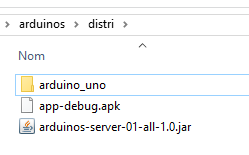
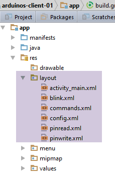
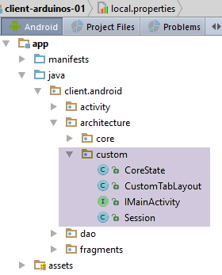
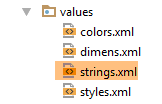
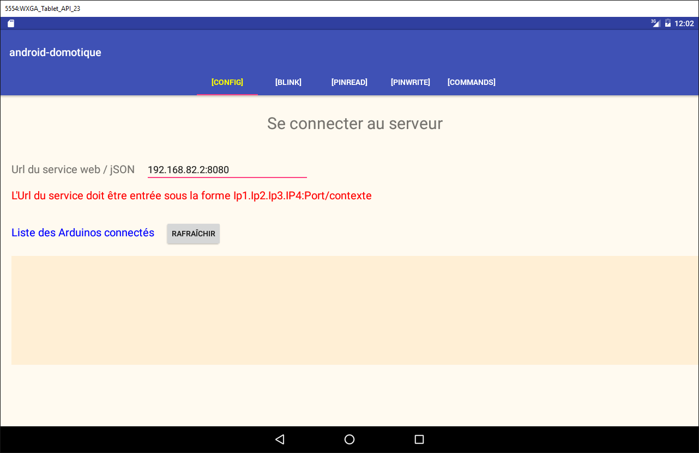
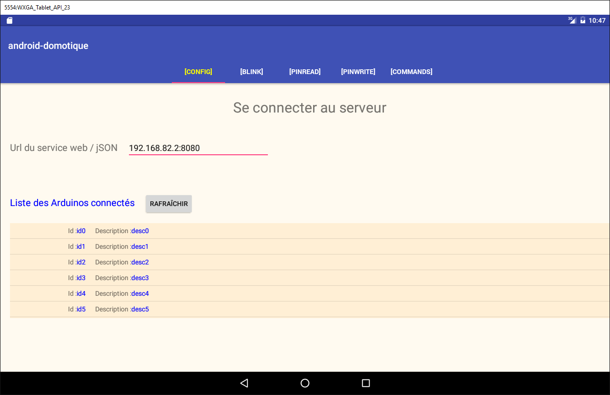
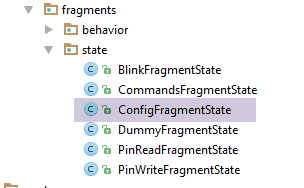

5. المهمة 2 - التحكم في أجهزة Arduino باستخدام جهاز لوحي يعمل بنظام Android
سنتعلم الآن كيفية التحكم في لوحة أردوينو باستخدام جهاز لوحي. المثال الذي سنتبعه هو مشروع [client-android-skel] من الدورة (انظر الفقرة 2).
5.1. بنية المشروع
سيكون للمشروع بأكمله البنية التالية:
 |
- سيتم تزويدك بالكتلة [1]، وهي خادم الويب/JSON وأجهزة Arduino؛
- ستحتاج إلى بناء المكون [2]، وهو برنامج جهاز Android اللوحي للتواصل مع خادم الويب/JSON.
5.2. الأجهزة
المكونات التالية متاحة لك:
- جهاز Arduino مزود بواقي إيثرنت ومصباح LED ومستشعر درجة الحرارة؛
- جهاز miniHub لمشاركته مع طالب آخر؛
- كابل USB لتشغيل Arduino؛
- كابلان شبكيان لتوصيل جهاز Arduino والكمبيوتر الشخصي بنفس الشبكة الخاصة؛
- جهاز لوحي يعمل بنظام أندرويد؛
5.2.1. جهاز Arduino
 |
إليك كيفية توصيل المكونات المختلفة معًا:
- افصل كابل الشبكة عن جهاز الكمبيوتر الخاص بك؛
- قم بتوصيل جهاز الكمبيوتر الخاص بك بـ Arduino باستخدام كابل الشبكة؛
- سيكون جهاز Arduino الذي لديك مبرمجًا بالفعل. وسيكون عنوان IP الخاص به هو [192.168.2.2]. لكي يتعرف جهاز الكمبيوتر الخاص بك على جهاز Arduino، يجب عليك تخصيص عنوان IP له على شبكة [192.168.2]. وقد تمت برمجة أجهزة Arduino للتواصل مع جهاز كمبيوتر بعنوان IP [192.168.2.1]. إليك كيفية القيام بذلك:
انتقل إلى [لوحة التحكم\الشبكة والإنترنت\مركز الشبكة والمشاركة]:
 |
- في [1]، انقر فوق رابط [الشبكة المحلية]؛
- في [2]، انقر فوق الزر [خصائص] الخاص بالشبكة المحلية؛
 |  |
- في [3]، انقر فوق خصائص [IPv4] لمحول [اتصال الشبكة المحلية]؛
- في [4]، قم بتعيين عنوان IP [192.168.2.1] وقناع الشبكة الفرعية [255.255.255.0] لهذا المحول؛
- في [5]، انقر فوق [موافق] عدة مرات حسب الضرورة للخروج من المعالج.
5.2.2. الجهاز اللوحي
- باستخدام محول Wi-Fi الخاص بك، قم بتوصيل جهاز الكمبيوتر بشبكة Wi-Fi التي سنوفرها. افعل الشيء نفسه مع جهازك اللوحي؛
- تحقق من عنوان IP لشبكة Wi-Fi الخاص بجهاز الكمبيوتر الخاص بك عن طريق كتابة [ipconfig] في نافذة موجه الأوامر. ستجد عنوانًا مثل [192.168.x.y]؛
dos>ipconfig
Configuration IP de Windows
Carte réseau sans fil Wi-Fi :
Suffixe DNS propre à la connexion. . . :
Adresse IPv6 de liaison locale. . . . .: fe80::39aa:47f6:7537:f8e1%2
Adresse IPv4. . . . . . . . . . . . . .: 192.168.1.25
Masque de sous-réseau. . . . . . . . . : 255.255.255.0
Passerelle par défaut. . . . . . . . . : 192.168.1.1
- تحقق من عنوان IP لشبكة Wi-Fi الخاص بجهازك اللوحي. اسأل مدرسك عن كيفية القيام بذلك إذا كنت غير متأكد. ستجد عنوانًا مثل [192.168.x.z]؛
- قم بتعطيل جدار الحماية الخاص بجهاز الكمبيوتر الخاص بك إذا كان نشطًا [لوحة التحكم\النظام والأمان\جدار حماية Windows]؛
- في نافذة موجه الأوامر، تحقق من أن الكمبيوتر والكمبيوتر اللوحي يمكنهما التواصل عن طريق كتابة الأمر [ping 192.168.x.z]، حيث [192.168.x.z] هو عنوان IP الخاص بالكمبيوتر اللوحي. يجب أن يستجيب الكمبيوتر اللوحي بعد ذلك:
dos>ping 192.168.1.26
Envoi d'une requête 'Ping' 192.168.1.26 avec 32 octets de données :
Réponse de 192.168.1.26 : octets=32 temps=102 ms TTL=64
Réponse de 192.168.1.26 : octets=32 temps=134 ms TTL=64
Réponse de 192.168.1.26 : octets=32 temps=168 ms TTL=64
Réponse de 192.168.1.26 : octets=32 temps=208 ms TTL=64
Statistiques Ping pour 192.168.1.26:
Paquets : envoyés = 4, reçus = 4, perdus = 0 (perte 0%),
Durée approximative des boucles en millisecondes :
Minimum = 102ms, Maximum = 208ms, Moyenne = 153ms
أصبحت إعدادات الشبكة في نظامك جاهزة الآن.
5.2.3. محاكي [Genymotion]
يعد محاكي [Genymotion] (انظر القسم 6.9) بديلاً رائعًا للجهاز اللوحي. فهو سريع تقريبًا ولا يتطلب اتصالاً بشبكة Wi-Fi. نوصي باستخدام هذه الطريقة. يمكنك استخدام الجهاز اللوحي للاختبار النهائي لتطبيقك.
5.3. برمجة أردوينو
نركز هنا على كتابة كود C لأردوينو:
 |
انظر أيضًا
- تثبيت بيئة تطوير Arduino (انظر القسم 6.1)؛
- استخدام مكتبات JSON (الملاحق، القسم 6.6)؛
- في بيئة تطوير Arduino، اختبر مثال خادم TCP (مثل خادم الويب) ومثال عميل TCP (مثل عميل Telnet)؛
- الملاحق المتعلقة ببيئة برمجة Arduino في القسم 6.1.
 |
Arduino عبارة عن مجموعة من المسامير المتصلة بالأجهزة. هذه المسامير هي مداخل أو مخارج. قيمها ثنائية أو تناظرية. للتحكم في Arduino، هناك عمليتان أساسيتان:
- كتابة قيمة ثنائية/تناظرية إلى دبوس محدد برقمه؛
- قراءة قيمة ثنائية/تناظرية من دبوس محدد برقمه؛
إلى هاتين العمليتين الأساسيتين، سنضيف عملية ثالثة:
- جعل مصباح LED يومض لمدة معينة وبتردد معين. يمكن تنفيذ هذه العملية عن طريق تكرار استدعاء العمليتين الأساسيتين السابقتين. ومع ذلك، سنرى في الاختبارات أن التبادلات بين طبقة [DAO] و Arduino تستغرق حوالي ثانية واحدة. لذلك، لا يمكن جعل مصباح LED يومض كل 100 مللي ثانية، على سبيل المثال. لذا، سنقوم بتنفيذ وظيفة الوميض هذه على Arduino نفسه.
سيعمل Arduino على النحو التالي:
- يتم الاتصال بين طبقة [DAO] و Arduino عبر شبكة TCP-IP من خلال تبادل أسطر نصية بتنسيق JSON (JavaScript Object Notation)؛
- عند بدء التشغيل، يتصل Arduino بالمنفذ 100 لخادم التسجيل الموجود في طبقة [DAO]. ويرسل سطرًا واحدًا من النص إلى الخادم:
هذه سلسلة JSON تصف جهاز Arduino الذي يتصل:
- id: معرف جهاز Arduino؛
- desc: وصف لما يمكن أن يفعله Arduino. هنا، قمنا ببساطة بتحديد طراز Arduino؛
- mac: عنوان MAC لجهاز Arduino؛
- المنفذ: رقم المنفذ الذي سينتظر عليه جهاز Arduino الأوامر الواردة من طبقة [DAO].
جميع هذه المعلومات بتنسيق سلسلة باستثناء المنفذ، الذي هو عدد صحيح.
- بمجرد تسجيل Arduino في خادم التسجيل، يبدأ في الاستماع على المنفذ الذي حدده للخادم (102 أعلاه). وينتظر أوامر JSON بالصيغة التالية:
هذه سلسلة JSON تحتوي على العناصر التالية:
- id: معرف للأمر. يمكن أن يكون أي شيء؛
- ac: إجراء. هناك ثلاثة إجراءات:
- pw (كتابة الدبوس) لكتابة قيمة على دبوس،
- pr (قراءة الدبوس) لقراءة القيمة من دبوس،
- cl (الوميض) لجعل مصباح LED يومض؛
- pa: معلمات الإجراء. تعتمد هذه على الإجراء.
- يقوم Arduino دائمًا بإرجاع استجابة إلى عميله. وهي عبارة عن سلسلة JSON بالصيغة التالية:
حيث
- id: معرف الأمر الذي يتم الرد عليه؛
- er (خطأ): رمز خطأ في حالة حدوث خطأ، وإلا فإنه يساوي 0؛
- et (الحالة): قاموس يظل فارغًا دائمًا باستثناء الأمر القراءة pr. عندئذٍ يحتوي القاموس على قيمة رقم الدبوس x الذي تم طلبه.
فيما يلي بعض الأمثلة لتوضيح المواصفات السابقة:
اجعل LED رقم 8 يومض 10 مرات بفترة 100 مللي ثانية:
الأمر | |
الاستجابة |
معلمات الأمر cl هي: مدة (dur) الوميض بالمللي ثانية، وعدد (nb) الومضات، ورقم دبوس LED.
اكتب القيمة الثنائية 1 في الدبوس 7:
الأمر | |
الاستجابة |
معلمات pa للأمر pw هي: وضع الكتابة mod (b للثنائي أو a للتناظري)، والقيمة val المراد كتابتها، ورقم الدبوس. بالنسبة للكتابة الثنائية، تكون val هي 0 أو 1. بالنسبة للكتابة التناظرية، تكون val في النطاق [0,255].
اكتب القيمة التناظرية 120 في الدبوس 2:
الأمر | |
الاستجابة |
قراءة القيمة التناظرية من الدبوس 0:
الأمر | |
الاستجابة |
معلمات pa للأمر pr هي: وضع القراءة (ثنائي أو تناظري)، ورقم الدبوس. إذا لم يكن هناك خطأ، يضع Arduino قيمة الدبوس المطلوب في مفتاح "et" في استجابته. هنا، يشير pin0 إلى أنه تم طلب قيمة الدبوس 0، و1023 هي تلك القيمة. في وضع القراءة، ستكون القيمة التناظرية في النطاق [0، 1024].
لقد قدمنا الأوامر الثلاثة cl و pw و pr. قد يتساءل المرء عن سبب عدم استخدامنا لحقول أكثر وضوحًا في سلاسل JSON — مثل action بدلاً من ac، و pinwrite بدلاً من pw، و parameters بدلاً من pa. تتمتع Arduino بذاكرة محدودة للغاية. ومع ذلك، فإن سلاسل JSON المتبادلة مع Arduino تساهم في استخدام الذاكرة. لذلك اخترنا تقصيرها قدر الإمكان.
الآن دعونا نلقي نظرة على بعض حالات الخطأ:
الأمر | |
الاستجابة |
تم إرسال أمر غير بتنسيق JSON. أرجع Arduino رمز الخطأ 100.
الأمر | |
الاستجابة |
تم إرسال أمر pr بدون معلمة pin. أرجع Arduino رمز الخطأ 302.
الأمر | |
الاستجابة |
أرسلنا أمر قراءة دبوس غير معروف (pr). أرجع Arduino رمز الخطأ 104.
لن نواصل الأمثلة. القاعدة بسيطة. يجب ألا يتعطل Arduino، بغض النظر عن الأمر المرسل إليه. قبل تنفيذ أمر JSON، يتأكد من صحة الأمر. بمجرد حدوث خطأ، يتوقف Arduino عن تنفيذ الأمر ويعيد سلسلة خطأ JSON إلى عميله. مرة أخرى، نظرًا لأن مساحة الذاكرة محدودة، فإننا نعيد رمز خطأ بدلاً من رسالة كاملة.
يتم توفير كود البرنامج الذي يعمل على Arduino في الأمثلة الواردة في هذا المستند:
 |
لنقله إلى Arduino:
- قم بتوصيله بجهاز الكمبيوتر الخاص بك؛
 |  |
- في [1]، افتح الملف [arduino_uno.ino]. سيتم تشغيل Arduino IDE وتحميل الملف؛
ملاحظة: تم إنشاء هذا البرنامج واختباره في الأصل باستخدام Arduino IDE 1.5.x. ومنذ ذلك الحين، تم إصدار إصدارات أخرى من بيئة التطوير هذه. ولم يعمل البرنامج مع Arduino IDE 1.6.x. ويبدو أن هناك مشكلة في التوافق مع الإصدارات السابقة بين الإصدارين 1.6 و1.5.
- في [2-4]، حدد نوع Arduino المستخدم؛
 |  |
- في [5-7]، حدد المنفذ التسلسلي الذي يتصل به على جهاز الكمبيوتر؛
- في [8]، قم بتحميل برنامج [arduino_uno] إلى Arduino؛
يحتوي كود البرنامج على تعليقات كثيرة. يمكن للقراء المهتمين الرجوع إليه. نحن نكتفي بتسليط الضوء على أسطر الكود التي تهيئ الاتصال ثنائي الاتجاه بين العميل والخادم بين Arduino والكمبيوتر الشخصي:
#include <SPI.h>
#include <Ethernet.h>
#include <ajSON.h>
// ---------------------------------- CONFIGURATION DE L'ARDUINO UNO
// adresse MAC de l'Arduino UNO
byte macArduino[] = {
0x90, 0xA2, 0xDA, 0x0D, 0xEE, 0xC7 };
char * strMacArduino="90:A2:DA:0D:EE:C7";
// l'adresse IP de l'Arduino
IPAddress ipArduino(192,168,2,2);
// son identifiant
char * idArduino="cuisine";
// port du serveur Arduino
int portArduino=102;
// description de l'Arduino
char * descriptionArduino="contrôle domotique";
// le serveur Arduino travaillera sur le port 102
EthernetServer server(portArduino);
// IP du serveur d'enregistrement
IPAddress ipServeurEnregistrement(192,168,2,1);
// port du serveur d'enregistrement
int portServeurEnregistrement=100;
// le client Arduino du serveur d'enregistrement
EthernetClient clientArduino;
// la commande du client
char commande[100];
// la réponse de l'Arduino
char message[100];
// initialisation
void setup() {
// Le moniteur série permettra de suivre les échanges
Serial.begin(9600);
// démarrage de la connection Ethernet
Ethernet.begin(macArduino,ipArduino);
// mémoire disponible
Serial.print(F("Memoire disponible : "));
Serial.println(freeRam());
}
// boucle infinie
void loop()
{
...
}
- السطر 8: عنوان MAC الخاص بـ Arduino. لا يهم ذلك كثيرًا هنا لأن Arduino سيكون على شبكة خاصة مع جهاز كمبيوتر شخصي ووحدة Arduino واحدة أو أكثر. يجب أن يكون عنوان MAC فريدًا على هذه الشبكة الخاصة. عادةً ما تحتوي لوحة شبكة Arduino على ملصق يشير إلى عنوان MAC للوحة. إذا كان هذا الملصق مفقودًا ولا تعرف عنوان MAC للوحة، يمكنك إدخال ما تريد في السطر 8 طالما تم اتباع قاعدة تفرد عنوان MAC على الشبكة الخاصة؛
- السطر 11: عنوان IP للبطاقة. مرة أخرى، يمكنك إدخال أي قيمة بالشكل [192.168.2.x] وتغيير x لتناسب أجهزة Arduino المختلفة على الشبكة الخاصة؛
- السطر 13: معرف Arduino. يجب أن يكون فريدًا بين معرفات أجهزة Arduino الموجودة على نفس الشبكة الخاصة؛
- السطر 15: منفذ خدمة Arduino. يمكنك إدخال ما تريد؛
- السطر 17: وصف وظيفة Arduino. يمكنك إدخال ما تريد. كن حذرًا مع السلاسل الطويلة نظرًا لمحدودية ذاكرة Arduino؛
- السطر 21: عنوان IP لخادم التسجيل الخاص بـ Arduino على جهاز الكمبيوتر. يجب عدم تغييره؛
- السطر 23: منفذ خدمة التسجيل هذه. يجب عدم تغييره؛
5.4. خادم الويب/JSON
5.4.1. التثبيت

يتم توفير ملف Java الثنائي لخادم الويب/JSON:
 |
افتح نافذة الأوامر واكتب الأمر التالي:
إذا لم يكن [java.exe] موجودًا في مسار PATH في موجه الأوامر، فستحتاج إلى كتابة المسار الكامل لـ [java.exe] (عادةً C:\Program Files\java\...).
ستفتح نافذة DOS وتعرض السجلات:
. ____ _ __ _ _
/\\ / ___'_ __ _ _(_)_ __ __ _ \ \ \ \
( ( )\___ | '_ | '_| | '_ \/ _` | \ \ \ \
\\/ ___)| |_)| | | | | || (_| | ) ) ) )
' |____| .__|_| |_|_| |_\__, | / / / /
=========|_|==============|___/=/_/_/_/
:: Spring Boot :: (v0.5.0.M6)
2014-01-06 11:11:35.550 INFO 8408 --- [ main] arduino.rest.metier.Application : Starting Application on Gportpers3 with PID 8408 (C:\Users\SergeTahÚ\Desktop\part2\server.jar started by ST)
2014-01-06 11:11:35.587 INFO 8408 --- [ main] ationConfigEmbeddedWebApplicationContext : Refreshing org.springframework.boot.context.embedded.AnnotationConfigEmbeddedWebApplicationContext@6a4ba620: startup date [Mon Jan 06 11:11:35 CET 2014]; root of context hierarchy
2014-01-06 11:11:36.765 INFO 8408 --- [ main] o.apache.catalina.core.StandardService : Starting service Tomcat
2014-01-06 11:11:36.766 INFO 8408 --- [ main] org.apache.catalina.core.StandardEngine : Starting Servlet Engine: Apache Tomcat/7.0.42
2014-01-06 11:11:36.876 INFO 8408 --- [ost-startStop-1] o.a.c.c.C.[Tomcat].[localhost].[/] : Initializing Spring embedded WebApplicationContext
2014-01-06 11:11:36.877 INFO 8408 --- [ost-startStop-1] o.s.web.context.ContextLoader : Root WebApplicationContext: initialization completed in 1293 ms
2014-01-06 11:11:37.084 INFO 8408 --- [ost-startStop-1] o.a.c.c.C.[Tomcat].[localhost].[/] : Initializing Spring FrameworkServlet 'dispatcherServlet'
2014-01-06 11:11:37.084 INFO 8408 --- [ost-startStop-1] o.s.web.servlet.DispatcherServlet : FrameworkServlet 'dispatcherServlet': initialization started
2014-01-06 11:11:37.184 INFO 8408 --- [ost-startStop-1] o.s.w.s.handler.SimpleUrlHandlerMapping : Mapped URL path [/**/favicon.ico] onto handler of type [class org.springframework.web.servlet.resource.ResourceHttpRequestHandler]
2014-01-06 11:11:37.386 INFO 8408 --- [ost-startStop-1] s.w.s.m.m.a.RequestMappingHandlerMapping : Mapped "{[/arduinos/blink/{idCommande}/{idArduino}/{pin}/{duree}/{nombre}],methods=[GET],params=[],headers=[],consumes=[],produces=[],custom=[]}" onto public java.lang.String arduino.rest.metier.RestMetier.faireClignoterLed(java.lang.String,java.lang.String,java.lang.String,java.lang.String,java.lang.String,javax.servlet.http.HttpServletResponse)
2014-01-06 11:11:37.388 INFO 8408 --- [ost-startStop-1] s.w.s.m.m.a.RequestMappingHandlerMapping : Mapped "{[/arduinos/commands/{idArduino}],methods=[POST],params=[],headers=[],consumes=[],produces=[],custom=[]}" onto public java.lang.String arduino.rest.metier.RestMetier.sendCommandesJson(java.lang.String,java.lang.String,javax.servlet.http.HttpServletResponse)
2014-01-06 11:11:37.388 INFO 8408 --- [ost-startStop-1] s.w.s.m.m.a.RequestMappingHandlerMapping : Mapped "{[/arduinos/],methods=[GET],params=[],headers=[],consumes=[],produces=[],custom=[]}" onto public java.lang.String arduino.rest.metier.RestMetier.getArduinos(javax.servlet.http.HttpServletResponse)
2014-01-06 11:11:37.389 INFO 8408 --- [ost-startStop-1] s.w.s.m.m.a.RequestMappingHandlerMapping : Mapped "{[/arduinos/pinRead/{idCommande}/{idArduino}/{pin}/{mode}],methods=[GET],params=[],headers=[],consumes=[],produces=[],custom=[]}" onto public java.lang.String arduino.rest.metier.RestMetier.pinRead(java.lang.String,java.lang.String,java.lang.String,java.lang.String,javax.servlet.http.HttpServletResponse)
2014-01-06 11:11:37.390 INFO 8408 --- [ost-startStop-1] s.w.s.m.m.a.RequestMappingHandlerMapping : Mapped "{[/arduinos/pinWrite/{idCommande}/{idArduino}/{pin}/{mode}/{valeur}],methods=[GET],params=[],headers=[],consumes=[],produces=[],custom=[]}" onto public java.lang.String arduino.rest.metier.RestMetier.pinWrite(java.lang.String,java.lang.String,java.lang.String,java.lang.String,java.lang.String,javax.servlet.http.HttpServletResponse)
2014-01-06 11:11:37.463 INFO 8408 --- [ost-startStop-1] o.s.w.s.handler.SimpleUrlHandlerMapping : Mapped URL path [/**] onto handler of type [class org.springframework.web.servlet.resource.ResourceHttpRequestHandler]
2014-01-06 11:11:37.464 INFO 8408 --- [ost-startStop-1] o.s.w.s.handler.SimpleUrlHandlerMapping : Mapped URL path [/webjars/**] onto handler of type [class org.springframework.web.servlet.resource.ResourceHttpRequestHandler]
2014-01-06 11:11:37.881 INFO 8408 --- [ost-startStop-1] o.s.web.servlet.DispatcherServlet : FrameworkServlet 'dispatcherServlet': initialization completed in 796 ms
Serveur d'enregistrement lancÚ sur 192.168.2.1:100
2014-01-06 11:11:38.101 INFO 8408 --- [ Thread-4] arduino.dao.Recorder : Recorder : [11:11:38:101] : [Serveur d'enregistrement : attente d'un client]
2014-01-06 11:11:38.142 INFO 8408 --- [ main] arduino.rest.metier.Application : Started Application in 3.257 seconds
- السطر 11: تم تشغيل خادم Tomcat مدمج؛
- السطر 15: تم تحميل وتنفيذ برنامج Spring MVC [dispatcherServlet]؛
- السطر 18: تم الكشف عن عنوان URL REST [/arduinos/blink/{commandId}/{ArduinoId}/{pin}/{duration}/{count}]؛
- السطر 19: يتم الكشف عن عنوان URL REST [/arduinos/commands/{idArduino}]؛
- السطر 20: يتم الكشف عن عنوان URL REST [/arduinos/]؛
- السطر 21: تم الكشف عن عنوان URL REST [/arduinos/pinRead/{commandId}/{ArduinoId}/{pin}/{mode}]؛
- السطر 22: تم الكشف عن عنوان URL REST [/arduinos/pinWrite/{commandId}/{ArduinoId}/{pin}/{mode}/{value}]؛
- السطر 26: تم تشغيل خادم تسجيل Arduino؛
قم بتوصيل Arduino بالكمبيوتر إذا لم تكن قد قمت بذلك بالفعل. يجب تعطيل جدار الحماية الخاص بالكمبيوتر. بعد ذلك، في متصفح الويب، أدخل عنوان URL [http://localhost:8080/arduinos]:
 |
من المفترض أن ترى معرف جهاز Arduino المتصل يظهر. إذا لم يظهر شيء، فحاول إعادة ضبط جهاز Arduino. يوجد به زر إعادة ضبط لهذا الغرض.
تم الآن تثبيت خادم الويب/JSON.
5.4.2. عناوين URL التي تعرضها خدمة الويب/JSON
انظر: المشروع [مثال-15] (انظر القسم 1.16.1)؛
تم تنفيذ خدمة الويب/JSON باستخدام Spring MVC وتوفر عناوين URL التالية:
@Controller
public class WebController {
// business layer
@Autowired
private IMetier métier;
// list of arduinos
@RequestMapping(value = "/arduinos", method = RequestMethod.GET, produces = MediaType.APPLICATION_JSON_VALUE)
@ResponseBody
public String getArduinos() throws JsonProcessingException {
...
}
// flashing
@RequestMapping(value = "/arduinos/blink/{idCommande}/{idArduino}/{pin}/{duree}/{nombre}", method = RequestMethod.GET, produces = MediaType.APPLICATION_JSON_VALUE)
@ResponseBody
public String faireClignoterLed(@PathVariable("idCommande") String idCommande, @PathVariable("idArduino") String idArduino, @PathVariable("pin") int pin, @PathVariable("duree") int duree, @PathVariable("nombre") int nombre) throws JsonProcessingException {
...
}
// order dispatch JSON
@RequestMapping(value = "/arduinos/commands/{idArduino}", method = RequestMethod.POST, produces = MediaType.APPLICATION_JSON_VALUE, consumes = MediaType.APPLICATION_JSON_VALUE)
@ResponseBody
public String sendCommandesJson(@PathVariable("idArduino") String idArduino, HttpServletRequest request) throws IOException {
...
}
// pin reading
@RequestMapping(value = "/arduinos/pinRead/{idCommande}/{idArduino}/{pin}/{mode}", method = RequestMethod.GET, produces = MediaType.APPLICATION_JSON_VALUE)
@ResponseBody
public String pinRead(@PathVariable("idCommande") String idCommande, @PathVariable("idArduino") String idArduino, @PathVariable("pin") int pin, @PathVariable("mode") String mode) throws JsonProcessingException {
....
}
// writing pin
@RequestMapping(value = "/arduinos/pinWrite/{idCommande}/{idArduino}/{pin}/{mode}/{valeur}", method = RequestMethod.GET, produces = MediaType.APPLICATION_JSON_VALUE)
@ResponseBody
public String pinWrite(@PathVariable("idCommande") String idCommande, @PathVariable("idArduino") String idArduino, @PathVariable("pin") int pin, @PathVariable("mode") String mode, @PathVariable("valeur") int valeur) throws JsonProcessingException {
...
}
}
الاستجابات المرسلة من الخادم هي تمثيلات JSON للفئة [Response<T>] التالية:
package client.android.dao.service;
import java.util.List;
public class Response<T> {
// ----------------- properties
// operation status
private int status;
// any status messages
private List<String> messages;
// the body of the reply
private T body;
// manufacturers
public Response() {
}
public Response(int status, List<String> messages, T body) {
this.status = status;
this.messages = messages;
this.body = body;
}
// getters and setters
...
}
يعيد عنوان URL [/arduinos] استجابة من النوع [Response<List<Arduino>>]، حيث [Arduino] هي الفئة التالية:
package android.arduinos.entities;
import java.io.Serializable;
public class Arduino implements Serializable {
// data
private String id;
private String description;
private String mac;
private String ip;
private int port;
// getters and setters
...
}
- السطر 7: [id] هو معرف Arduino؛
- السطر 8: وصفه؛
- السطر 9: عنوان MAC الخاص به؛
- السطر 10: عنوان IP الخاص به؛
- السطر 11: المنفذ الذي يستمع من خلاله للأوامر؛
عناوين URL:
- [/arduinos/blink/{commandId}/{ArduinoId}/{pin}/{duration}/{count}];
- [/arduinos/pinRead/{commandId}/{ArduinoId}/{pin}/{mode}] ;
- [/arduinos/pinWrite/{commandId}/{ArduinoId}/{pin}/{mode}/{value}] ;
- [/arduinos/commands/{ArduinoID}];
إرجاع استجابة من النوع [Response<ArduinoResponse>]، حيث تمثل فئة [ArduinoResponse] استجابة Arduino القياسية:
public class ArduinoResponse implements Serializable {
private String json;
private String id;
private String erreur;
private Map<String, Object> etat;
// getters and setters
...
}
- [json]: سلسلة JSON المرسلة من Arduino والتي تعذر فك تشفيرها (في حالة حدوث خطأ)، وإلا تكون null؛
- [id]: معرف الأمر الذي يستجيب له Arduino؛
- [error]: رمز خطأ، 0 إذا كان كل شيء على ما يرام، وإلا يكون شيئًا آخر؛
- [status]: قاموس يحتوي على الاستجابة الخاصة بالأمر. وعادةً ما يكون فارغًا ما لم يطلب الأمر قراءة قيمة من Arduino، وفي هذه الحالة تُدرج تلك القيمة في هذا القاموس؛
5.4.3. اختبار خدمة الويب / JSON
تعرف على خادم الويب / JSON من خلال اختبار عناوين URL التالية:
فيما يلي بعض لقطات الشاشة لما يجب أن تراه:
احصل على قائمة أجهزة Arduino المتصلة:
 |
سلسلة JSON المستلمة من خادم الويب / JSON هي كائن يحتوي على الحقول التالية:
- [status]: 0 تشير إلى عدم وجود خطأ — وإلا، فقد حدث خطأ؛
- [messages]: قائمة بالرسائل التي تشرح الخطأ في حالة حدوثه:
- [body]: قائمة أجهزة Arduino في حالة عدم حدوث خطأ. يتم بعد ذلك وصف كل جهاز Arduino بواسطة كائن يحتوي على الحقول التالية:
- [id]: معرف Arduino. لا يمكن أن يكون هناك جهازان Arduino لهما نفس المعرف؛
- [description]: وصف موجز لوظائف Arduino؛
- [mac]: عنوان MAC لجهاز Arduino؛
- [ip]: عنوان IP لجهاز Arduino؛
- [port]: المنفذ الذي يستقبل الأوامر من خلاله؛
اجعل مصباح LED الموجود على الدبوس 8 في Arduino والمحدد بـ [cuisine] يومض 20 مرة كل 100 مللي ثانية:
 |
سلسلة JSON المستلمة من خادم الويب / JSON هي كائن يحتوي على الحقول التالية:
- [status]: 0 تشير إلى عدم وجود خطأ — وإلا، فقد حدث خطأ؛
- [messages]: قائمة بالرسائل التي تشرح الخطأ في حالة حدوثه:
- [body]: استجابة Arduino في حالة عدم وجود خطأ:
- [id]: معرف الأمر. هذا المعرف هو الرقم 1 في [/blink/1]. يضم Arduino معرف الأمر هذا في استجابته؛
- [error]: رقم الخطأ. تشير أي قيمة غير 0 إلى وجود خطأ؛
- [state]: يُستخدم فقط لقراءة دبوس. قيمته هي قيمة الدبوس؛
- [json]: يُستخدم فقط في حالة حدوث خطأ JSON بين العميل والخادم. قيمته هي سلسلة JSON الخاطئة المرسلة من Arduino؛
قراءة تناظرية للمسمار 0 على Arduino المحدد بـ [kitchen]:
 |
تشبه سلسلة JSON المستلمة من خادم الويب /json السلسلة السابقة، باستثناء الحقل [state] الذي يمثل قيمة الدبوس 0.
القراءة الثنائية للمسمار 5 على Arduino المحدد بـ [kitchen]:
 |
تشبه سلسلة JSON المستلمة من خادم الويب /json السلسلة السابقة.
كتابة ثنائية للقيمة 1 على الدبوس 8 في Arduino المحدد بـ [kitchen]:
 |
تشبه سلسلة JSON المستلمة من خادم الويب /json السلسلة السابقة.
يعد اختبار عنوان URL [http://localhost:8080/arduinos/commands/cuisine] أكثر تعقيدًا. تتوقع طريقة /jSON في خادم الويب التي تتعامل مع عنوان URL هذا طلب POST، وهو ما لا يمكن محاكاته بسهولة باستخدام متصفح. لاختبار عنوان URL هذا، يمكنك استخدام متصفح Chrome مع ملحق [Advanced REST Client] (انظر القسم 6.13):
 |
- في [1]، عنوان URL لطريقة الويب/JSON المراد اختبارها؛
- في [2]، طريقة POST لإرسال الطلب؛
- في [3-4]، القيمة المرسلة هي JSON؛
- في [5]، سلسلة JSON التي يتم إرسالها. لاحظ الأقواس المربعة التي تبدأ القائمة وتنهيها. هنا، تحتوي القائمة على أمر JSON واحد فقط يجعل الدبوس 8 يومض 10 مرات كل 100 مللي ثانية؛
- في [6]، يتم إرسال الطلب؛
 |
- في [7]، استجابة JSON المرسلة من الخادم. تلقى الكائن كائنًا يحتوي على الحقلين المعتادين [status، messages] وحقل [body] الذي تمثل قيمته قائمة استجابات Arduino لكل أمر من أوامر JSON المرسلة.
لنرى ما يحدث عندما نرسل أمر JSON بصيغة غير صحيحة إلى Arduino:
 |
ثم نتلقى الرد التالي:
 |
يمكننا أن نلاحظ أن رمز الخطأ في استجابة Arduino هو [104]، مما يشير إلى أن الأمر [xx] لم يتم التعرف عليه.
5.5. اختبار عميل Android
 |
فيما يلي الملف القابل للتنفيذ لعميل Android النهائي:
استخدم الماوس لسحب ملف [app-debug.apk] الموجود أعلاه إلى محاكي الجهاز اللوحي [GenyMotion]. سيتم بعد ذلك حفظه وتشغيله. قم أيضًا بتشغيل خادم الويب/jSON إذا لم تكن قد قمت بذلك بعد. قم بتوصيل جهاز Arduino بالكمبيوتر الشخصي مع توصيل مصباح LED به. يتيح لك عميل Android إدارة أجهزة Arduino عن بُعد. ويعرض الشاشات التالية للمستخدم.
تتيح لك علامة التبويب [CONFIG] الاتصال بالخادم واسترداد قائمة أجهزة Arduino المتصلة:

- في [1]، أدخل عنوان IP [192.168.2.1] المخصص لجهاز الكمبيوتر الخاص بك (انظر القسم 5.2).
تسمح لك علامة التبويب [PINWRITE] بكتابة قيمة إلى دبوس Arduino:


تتيح لك علامة التبويب [PINREAD] قراءة القيمة من دبوس Arduino:

تسمح لك علامة التبويب [BLINK] بجعل مصباح LED الخاص بـ Arduino يومض:

تسمح لك علامة التبويب [COMMAND] بإرسال أمر JSON إلى Arduino:

5.6. عميل Android لخدمة الويب / JSON
سنناقش الآن كتابة عميل Android.
5.6.1. بنية العميل
ستكون بنية عميل Android هي بنية مشروع [مثال-15] (انظر القسم 1.16.2)؛
 |
- تتواصل طبقة [DAO] مع خادم الويب/JSON؛
يجب أن يكون عميل Android قادرًا على التحكم في عدة أجهزة Arduino في وقت واحد. على سبيل المثال، نريد أن نتمكن من جعل مصباحي LED على جهازي Arduino يومضان في نفس الوقت، وليس واحدًا تلو الآخر. لذلك، سيستخدم عميل Android الخاص بنا مهمة غير متزامنة واحدة لكل جهاز Arduino، وستعمل هذه المهام بالتوازي.
5.6.2. مشروع عميل Android Studio
انسخ مشروع [client-android-skel] (انظر القسم 2) إلى مشروع [client-arduinos-01] (إذا لزم الأمر، راجع كيفية نسخ مشروع Gradle في القسم 1.15):
5.6.3. طرق العرض الخمسة بتنسيق XML
 |
ستكون هناك خمس طرق عرض XML:
- [blink]: لجعل مصباح LED في Arduino يومض. وهي مرتبطة بجزء [BlinkFragment]؛
- [commands]: لإرسال أمر JSON إلى Arduino. وهي مرتبطة بجزء [CommandsFragment]؛
- [config]: لتكوين خدمة الويب/عنوان URL JSON واسترداد القائمة الأولية لأجهزة Arduino المتصلة. وهي مرتبطة بجزء [ConfigFragment]؛
- [pinread]: لقراءة القيمة الثنائية أو التناظرية لمسمار Arduino. وهي مرتبطة بجزء [PinReadFragment]؛
- [pinwrite]: لكتابة قيمة ثنائية أو تناظرية إلى دبوس Arduino. وهي مرتبطة بجزء [PinWriteFragment]؛
في الوقت الحالي، ستحتوي هذه العروض الخمسة لـ XML جميعها على نفس المحتوى الفارغ:
<?xml version="1.0" encoding="utf-8"?>
<ScrollView xmlns:android="http://schemas.android.com/apk/res/android"
android:id="@+id/scrollView1"
android:layout_width="wrap_content"
android:layout_height="wrap_content">
<RelativeLayout xmlns:android="http://schemas.android.com/apk/res/android"
android:layout_width="match_parent"
android:layout_height="match_parent">
</RelativeLayout>
</ScrollView>
- تقع طريقة العرض داخل حاوية [RelativeLayout] (الأسطر 7–10)، والتي تقع بدورها داخل حاوية [ScrollView] (الأسطر 2–11). وهذا يضمن إمكانية تمرير طريقة العرض إذا تجاوزت حجم شاشة الجهاز اللوحي؛
المهمة: قم بإنشاء العروض الخمسة بتنسيق XML.
5.6.4. قائمة الأجزاء
نعلم أن الأجزاء في مشروع تم إنشاؤه باستخدام [client-android-skel] يجب أن تكون مرتبطة بقائمة، حتى لو كانت فارغة. هنا، لن تحتوي التطبيق على قائمة. القائمة الفارغة موجودة بالفعل في المشروع؛
 |
5.6.5. الأجزاء الخمسة للتطبيق
 |  |
المهمة: انسخ جزء [DummyFragment] إلى الأجزاء الخمسة للتطبيق، كما هو موضح في [2].
تحتوي شريحة [ConfigFragment] على الهيكل التالي:
package client.android.fragments.behavior;
import client.android.R;
import client.android.architecture.core.AbstractFragment;
import client.android.architecture.custom.CoreState;
import client.android.fragments.state.DummyFragmentState;
import org.androidannotations.annotations.EFragment;
import org.androidannotations.annotations.OptionsMenu;
@EFragment
@OptionsMenu(R.menu.menu_vide)
public class ConfigFragment extends AbstractFragment {
// fields inherited from parent class -------------------------------------------------------
...
استبدل السطر 10 بالسطر التالي:
@EFragment(R.layout.config)
المهمة: قم بنفس الشيء بالنسبة للأجزاء الأربعة الأخرى عن طريق تعديل سمة [@EFragment] الخاصة بالفئة.
الجزء | عرض |
ConfigFragment | |
PinReadFragment | |
PinWriteFragment | |
CommandsFragment | |
BlinkFragment | |
5.6.6. حالات الأجزاء
 |  |
سيكون لكل جزء حالة.
المهمة: قم بتكرار فئة [DummyFragmentState] خمس مرات لإنشاء الحالات الخمس الموضحة في [2].
5.6.7. تخصيص المشروع
 |
تحتوي حزمة [architecture / custom] على العناصر القابلة للتخصيص في بنية التطبيق.
5.6.7.1. واجهة [IMainActivity]
تحدد واجهة [IMainActivity] ما يمكن أن تطلبه الأجزاء من النشاط بالإضافة إلى ثوابت التطبيق. ستكون هذه الواجهة على النحو التالي:
package client.android.architecture.custom;
import client.android.architecture.core.ISession;
import client.android.dao.service.IDao;
public interface IMainActivity extends IDao {
// session access
ISession getSession();
// change of view
void navigateToView(int position, ISession.Action action);
// wait management
void beginWaiting();
void cancelWaiting();
// constant application -------------------------------------
// debug mode
boolean IS_DEBUG_ENABLED = true;
// maximum time to wait for server response
int TIMEOUT = 1000;
// waiting time before executing customer request
int DELAY = 000;
// basic authentication
boolean IS_BASIC_AUTHENTIFICATION_NEEDED = false;
// fragment adjacency
int OFF_SCREEN_PAGE_LIMIT = 1;
// tab bar
boolean ARE_TABS_NEEDED = true;
// waiting image
boolean IS_WAITING_ICON_NEEDED = true;
// number of fragments
int FRAGMENTS_COUNT = 5;
// view n°s
int VUE_CONFIG = 0;
int VUE_BLINK = 1;
int VUE_PINREAD = 2;
int VUE_PINWRITE = 3;
int VUE_COMMANDS = 4;
}
- الأسطر 25 و28 و31 و40: تكوين طبقة [DAO]. يستعلم هذا التطبيق عن خادم ويب/JSON؛
- السطر 37: يحتوي هذا التطبيق على علامات تبويب؛
- السطر 43: يحتوي هذا التطبيق على خمسة أجزاء؛
- الأسطر 46–50: أرقام الأجزاء الخمسة؛
- السطر 34: تجاور الأجزاء. يمكن للمطور تعيين قيمة هنا ضمن النطاق [1، FRAGMENTS_COUNT-1]؛
5.6.7.2. فئة [CoreState]
فئة [CoreState] هي الفئة الأم لحالات الأجزاء:
package client.android.architecture.custom;
import client.android.architecture.core.MenuItemState;
import client.android.fragments.state.*;
import com.fasterxml.jackson.annotation.JsonIgnoreProperties;
import com.fasterxml.jackson.annotation.JsonSubTypes;
import com.fasterxml.jackson.annotation.JsonTypeInfo;
@JsonIgnoreProperties(ignoreUnknown = true)
@JsonTypeInfo(use = JsonTypeInfo.Id.NAME, include = JsonTypeInfo.As.PROPERTY)
@JsonSubTypes({
@JsonSubTypes.Type(value = ConfigFragmentState.class),
@JsonSubTypes.Type(value = BlinkFragmentState.class),
@JsonSubTypes.Type(value = PinReadFragmentState.class),
@JsonSubTypes.Type(value = PinWriteFragmentState.class),
@JsonSubTypes.Type(value = CommandsFragmentState.class)}
)
public class CoreState {
// fragment visited or not
protected boolean hasBeenVisited = false;
// status of any fragment menu
protected MenuItemState[] menuOptionsState;
// getters and setters
...
}
- الأسطر 12–16: يجب إعلان فئات الحالة للخمس أجزاء هنا؛
5.6.8. فئة [MainActivity]
 |
ستكون فئة [MainActivity] كما يلي:
package client.android.activity;
import android.support.design.widget.TabLayout;
import android.util.Log;
import client.android.R;
import client.android.architecture.core.AbstractActivity;
import client.android.architecture.core.AbstractFragment;
import client.android.architecture.core.ISession;
import client.android.architecture.custom.IMainActivity;
import client.android.architecture.custom.Session;
import client.android.dao.entities.Arduino;
import client.android.dao.entities.ArduinoCommand;
import client.android.dao.entities.ArduinoResponse;
import client.android.dao.service.Dao;
import client.android.dao.service.IDao;
import client.android.dao.service.Response;
import client.android.fragments.behavior.*;
import org.androidannotations.annotations.Bean;
import org.androidannotations.annotations.EActivity;
import org.androidannotations.annotations.OptionsMenu;
import rx.Observable;
import java.util.List;
import java.util.Locale;
@EActivity
@OptionsMenu(R.menu.menu_main)
public class MainActivity extends AbstractActivity {
// layer [DAO]
@Bean(Dao.class)
protected IDao dao;
// session
private Session session;
// methods parent class -----------------------
@Override
protected void onCreateActivity() {
// log
if (IS_DEBUG_ENABLED) {
Log.d(className, "onCreateActivity");
}
// session
this.session = (Session) super.session;
// creation of the five tabs
for (int i = 0; i < 5; i++) {
TabLayout.Tab newTab = tabLayout.newTab();
newTab.setText(getFragmentTitle(i));
tabLayout.addTab(newTab);
}
}
@Override
protected IDao getDao() {
return dao;
}
@Override
protected AbstractFragment[] getFragments() {
return new AbstractFragment[]{new ConfigFragment_(), new BlinkFragment_(), new PinReadFragment_(), new PinWriteFragment_(), new CommandsFragment_()};
}
@Override
protected CharSequence getFragmentTitle(int position) {
Locale l = Locale.getDefault();
switch (position) {
case 0:
return getString(R.string.config_titre).toUpperCase(l);
case 1:
return getString(R.string.blink_titre).toUpperCase(l);
case 2:
return getString(R.string.pinread_titre).toUpperCase(l);
case 3:
return getString(R.string.pinwrite_titre).toUpperCase(l);
case 4:
return getString(R.string.commands_titre).toUpperCase(l);
}
return null;
}
@Override
protected void navigateOnTabSelected(int position) {
// fragment n° position is displayed
navigateToView(position, ISession.Action.NAVIGATION);
}
@Override
protected int getFirstView() {
return IMainActivity.VUE_CONFIG;
}
// implémentation IDao -----------------------------------------
}
- الأسطر 46–50: إنشاء علامات التبويب الخمس للتطبيق؛
- السطر 48: يتم توفير عناوين علامات التبويب بواسطة الطريقة الموجودة في الأسطر 63-79؛
- يتم إنشاء مثيلات الأجزاء الخمسة في السطر 60. وبسبب تعليقات AA، فإن فئات الأجزاء هي تلك التي تم عرضها سابقًا، مع إضافة شرطة سفلية في نهايتها؛
- الأسطر 63-79: يتم تعريف عنوان لكل جزء. سيتم استرداد هذه العناوين من الملف [res/values/strings.xml]
 |
محتوى ملف [strings.xml] هو كما يلي:
<?xml version="1.0" encoding="utf-8"?>
<resources>
<!-- application name -->
<string name="app_name">[arduinos-client-01]</string>
<!-- Fragments and tabs -->
<string name="config_titre">[Config]</string>
<string name="blink_titre">[Blink]</string>
<string name="pinread_titre">[PinRead]</string>
<string name="pinwrite_titre">[PinWrite]</string>
<string name="commands_titre">[Commands]</string>
</resources>
المهمة: قم بإنشاء العناصر المذكورة أعلاه وقم بتجميع المشروع. يجب ألا تكون هناك أخطاء.
قم بتشغيل المشروع. يجب أن ترى العرض التالي على المحاكي:

افحص السجلات المصاحبة لعرض العرض الأول وتتبع الخطوات المختلفة التي تم تنفيذها. قم بالتبديل بين علامات التبويب واستمر في متابعة السجلات.
5.6.9. عرض XML [config]
ستبدو طريقة عرض XML [config] كما يلي:
 |  |
يتم إنشاء العرض أعلاه بواسطة كود XML التالي:
<?xml version="1.0" encoding="utf-8"?>
<ScrollView xmlns:android="http://schemas.android.com/apk/res/android"
android:id="@+id/scrollView1"
android:layout_width="wrap_content"
android:layout_height="wrap_content">
<RelativeLayout
android:layout_width="match_parent"
android:layout_height="match_parent">
<TextView
android:id="@+id/txt_TitreConfig"
android:layout_width="wrap_content"
android:layout_height="wrap_content"
android:layout_alignParentTop="true"
android:layout_centerHorizontal="true"
android:layout_marginTop="150dp"
android:text="@string/txt_TitreConfig"
android:textSize="@dimen/titre"/>
<TextView
android:id="@+id/txt_UrlServiceRest"
android:layout_width="wrap_content"
android:layout_height="wrap_content"
android:layout_alignParentLeft="true"
android:layout_below="@+id/txt_TitreConfig"
android:layout_marginTop="50dp"
android:text="@string/txt_UrlServiceRest"
android:textSize="20sp"/>
<EditText
android:id="@+id/edt_UrlServiceRest"
android:layout_width="300dp"
android:layout_height="wrap_content"
android:layout_alignBaseline="@+id/txt_UrlServiceRest"
android:layout_alignBottom="@+id/txt_UrlServiceRest"
android:layout_marginLeft="20dp"
android:layout_toRightOf="@+id/txt_UrlServiceRest"
android:ems="10"
android:hint="@string/hint_UrlServiceRest"
android:inputType="textUri">
<requestFocus/>
</EditText>
<TextView
android:id="@+id/txt_MsgErreurIpPort"
android:layout_width="wrap_content"
android:layout_height="wrap_content"
android:layout_alignParentLeft="true"
android:layout_below="@+id/txt_UrlServiceRest"
android:layout_marginTop="20dp"
android:text="@string/txt_MsgErreurUrlServiceRest"
android:textColor="@color/red"
android:textSize="20sp"/>
<TextView
android:id="@+id/txt_arduinos"
android:layout_width="wrap_content"
android:layout_height="wrap_content"
android:layout_alignParentLeft="true"
android:layout_below="@+id/txt_MsgErreurIpPort"
android:layout_marginTop="40dp"
android:text="@string/titre_list_arduinos"
android:textColor="@color/blue"
android:textSize="20sp"/>
<Button
android:id="@+id/btn_Rafraichir"
android:layout_width="wrap_content"
android:layout_height="wrap_content"
android:layout_alignBaseline="@+id/txt_arduinos"
android:layout_alignBottom="@+id/txt_arduinos"
android:layout_marginLeft="20dp"
android:layout_toRightOf="@+id/txt_arduinos"
android:text="@string/btn_rafraichir"/>
<Button
android:id="@+id/btn_Annuler"
android:layout_width="wrap_content"
android:layout_height="wrap_content"
android:layout_alignBaseline="@+id/txt_arduinos"
android:layout_alignBottom="@+id/txt_arduinos"
android:layout_marginLeft="20dp"
android:layout_toRightOf="@+id/txt_arduinos"
android:text="@string/btn_annuler"
android:visibility="invisible"/>
<ListView
android:id="@+id/ListViewArduinos"
android:layout_width="match_parent"
android:layout_height="200dp"
android:layout_alignParentLeft="true"
android:layout_below="@+id/txt_arduinos"
android:layout_marginTop="30dp"
android:background="@color/wheat">
</ListView>
</RelativeLayout>
</ScrollView>
تستخدم طريقة العرض سلاسل نصية (android:text في الأسطر 15 و25 و37 و50 و61 و73) محددة في ملف [res/values/strings]:
 |
<?xml version="1.0" encoding="utf-8"?>
<resources>
<string name="app_name">android-domotique</string>
<!-- Fragments and tabs -->
<string name="config_titre">[Config]</string>
<string name="blink_titre">[Blink]</string>
<string name="pinread_titre">[PinRead]</string>
<string name="pinwrite_titre">[PinWrite]</string>
<string name="commands_titre">[Commands]</string>
<!-- Config -->
<string name="txt_TitreConfig">Se connecter au serveur</string>
<string name="txt_UrlServiceRest">Url du service web / jSON</string>
<string name="txt_MsgErreurUrlServiceRest">L\'Url du service doit être entrée sous la forme Ip1.Ip2.Ip3.IP4:Port/contexte</string>
<string name="hint_UrlServiceRest">ex (192.168.1.120:8080/rest)</string>
<string name="btn_annuler">Annuler</string>
<string name="btn_rafraichir">Rafraîchir</string>
<string name="titre_list_arduinos">Liste des Arduinos connectés</string>
</resources>
تستخدم طريقة العرض الألوان (android:textColor في السطرين 51 و62) المحددة في ملف [res/values/colors]:
 |
<?xml version="1.0" encoding="utf-8"?>
<resources>
<color name="colorPrimary">#3F51B5</color>
<color name="colorPrimaryDark">#303F9F</color>
<color name="colorAccent">#FF4081</color>
<color name="floral_white">#FFFAF0</color>
<!-- app -->
<color name="red">#FF0000</color>
<color name="blue">#0000FF</color>
<color name="wheat">#FFEFD5</color>
</resources>
تستخدم طريقة العرض أبعادًا (android:textSize في السطر 16) محددة في ملف [res/values/dimens]:
 |
<resources>
<!-- Default screen margins, per the Android Design guidelines. -->
<dimen name="activity_horizontal_margin">16dp</dimen>
<dimen name="activity_vertical_margin">16dp</dimen>
<dimen name="fab_margin">16dp</dimen>
<dimen name="appbar_padding_top">8dp</dimen>
<!-- appli -->
<dimen name="titre">30dp</dimen>
</resources>
لم يتم استخدام هذه التقنية لجميع الأبعاد. ومع ذلك، فهي الطريقة الموصى بها. فهي تتيح لك تغيير الأبعاد في مكان واحد.
المهمة: قم بإنشاء العناصر المذكورة أعلاه.
قم بتشغيل مشروعك مرة أخرى. يجب أن ترى العرض التالي:

5.6.10. جزء [ConfigFragment]
 |
للتعامل مع طريقة العرض [config] الجديدة، يتغير كود جزء [ConfigFragment] على النحو التالي:
package client.android.fragments.behavior;
import android.view.View;
import android.widget.Button;
import android.widget.EditText;
import android.widget.ListView;
import android.widget.TextView;
import client.android.R;
import client.android.architecture.core.AbstractFragment;
import client.android.architecture.custom.CoreState;
import client.android.architecture.custom.IMainActivity;
import client.android.fragments.state.ConfigFragmentState;
import org.androidannotations.annotations.Click;
import org.androidannotations.annotations.EFragment;
import org.androidannotations.annotations.OptionsMenu;
import org.androidannotations.annotations.ViewById;
@EFragment(R.layout.config)
@OptionsMenu(R.menu.menu_vide)
public class ConfigFragment extends AbstractFragment {
// visual interface elements
@ViewById(R.id.btn_Rafraichir)
protected Button btnRafraichir;
@ViewById(R.id.btn_Annuler)
protected Button btnAnnuler;
@ViewById(R.id.edt_UrlServiceRest)
protected EditText edtUrlServiceRest;
@ViewById(R.id.txt_MsgErreurIpPort)
protected TextView txtMsgErreurUrlServiceRest;
@ViewById(R.id.ListViewArduinos)
protected ListView listArduinos;
@Click(R.id.btn_Rafraichir)
protected void doRafraichir() {
}
// fragment lifecycle management -------------------------------------
@Override
public CoreState saveFragment() {
return new ConfigFragmentState();
}
@Override
protected int getNumView() {
return IMainActivity.VUE_CONFIG;
}
@Override
protected void initFragment(CoreState previousState) {
}
@Override
protected void initView(CoreState previousState) {
// 1st visit?
if(previousState==null){
txtMsgErreurUrlServiceRest.setVisibility(View.INVISIBLE);
}
}
@Override
protected void updateOnSubmit(CoreState previousState) {
}
@Override
protected void updateOnRestore(CoreState previousState) {
}
@Override
protected void notifyEndOfUpdates() {
// buttons
initButtons();
}
@Override
protected void notifyEndOfTasks(boolean runningTasksHaveBeenCanceled) {
}
// méthodes privées --------------------------------------------
private void initButtons() {
// the [Execute] button replaces the [Cancel] button
btnAnnuler.setVisibility(View.INVISIBLE);
btnRafraichir.setVisibility(View.VISIBLE);
}
}
- الأسطر 23–32: عناصر الواجهة المرئية؛
- الأسطر 58–60: عند الزيارة الأولى للجزء، يتم إخفاء رسالة الخطأ؛
- الأسطر 73–76: في كل مرة يتم فيها عرض الجزء، يتم إخفاء زر [إلغاء] (السطر 82) ويتم عرض زر [تحديث] (الأسطر 86–87). في الواقع، في هذا التطبيق، لا يمكن عرض جزء أثناء إجراء عملية غير متزامنة، وبالتالي يكون زر [إلغاء] مرئيًا؛
المهمة: قم بإنشاء العناصر المذكورة أعلاه.
قم بتشغيل هذه النسخة الجديدة. يجب أن تبدو الشاشة الأولى الآن كما يلي:

5.6.10.1. زر [تحديث]
في الوقت الحالي، سنتعامل مع النقر على زر [Refresh] على النحو التالي:
@Click(R.id.btn_Rafraichir)
protected void doRafraichir() {
// we're going to launch a task - we're preparing the wait
beginWaiting(1);
}
@Click(R.id.btn_Annuler)
protected void doAnnuler() {
if (isDebugEnabled) {
Log.d(className, "Annulation demandée");
}
// asynchronous tasks are cancelled
cancelRunningTasks();
}
protected void beginWaiting(int numberOfRunningTasks) {
// prepare to wait for tasks
beginRunningTasks(numberOfRunningTasks);
// the [Cancel] button replaces the [Refresh] button
btnRafraichir.setVisibility(View.INVISIBLE);
btnAnnuler.setVisibility(View.VISIBLE);
}
// fragment lifecycle management -------------------------------------
...
@Override
protected void notifyEndOfTasks(boolean runningTasksHaveBeenCanceled) {
// buttons in their original state
initButtons();
}
// méthodes privées --------------------------------------------
private void initButtons() {
// the [Execute] button replaces the [Cancel] button
btnAnnuler.setVisibility(View.INVISIBLE);
btnRafraichir.setVisibility(View.VISIBLE);
}
- الأسطر 1-5: الطريقة التي يتم تنفيذها عند النقر على زر [Refresh]؛
- السطر 4: نبدأ الانتظار؛
- السطر 18: نمرر عدد المهام غير المتزامنة المراد تشغيلها إلى الفئة الأصلية. ستظهر صورة التحميل؛
- السطور 20-21: سيؤدي هذا الانتظار إلى ظهور زر [Cancel]، واختفاء زر [Refresh]، وظهور صورة التحميل. لا يحدث أي شيء آخر. ومع ذلك، يمكن للمستخدم النقر على زر [Cancel]. ستُنفَّذ عندئذٍ الطريقة الموجودة في السطور 7-14؛
- السطر 13: يُطلب من الفئة الأصلية إلغاء جميع المهام. ستقوم الفئة بذلك وستستدعي بدورها الطريقة الموجودة في الأسطر 25-29 للإشارة إلى اكتمال جميع المهام. سيكون للمعلمة [runningTasksHaveBeenCanceled] القيمة true للإشارة إلى أن المهام قد تم إلغاؤها؛
- السطران 35-36: سيختفي زر [Cancel]، بينما سيظهر زر [Refresh] مرة أخرى.
المهمة: قم بإجراء هذه التغييرات ثم قم بتشغيل المشروع. تحقق من أن زر [Refresh] يبدأ الانتظار وأن زر [Cancel] يوقفه. راقب السجلات.
5.6.10.2. التحقق من صحة الإدخال
في الإصدار السابق، لم نقم بالتحقق من صحة عنوان URL الذي تم إدخاله. للتحقق من صحته، نضيف الكود التالي في [ConfigFragment]:
// entered values
private String urlServiceRest;
@Click(R.id.btn_Rafraichir)
protected void doRafraichir() {
// check entries
if (!pageValid()) {
return;
}
// we're going to launch a task - we're preparing the wait
beginWaiting(1);
}
// input verification
private boolean pageValid() {
// initially no error msg
txtMsgErreurUrlServiceRest.setVisibility(View.INVISIBLE);
// retrieve server IP and port
urlServiceRest = String.format("http://%s", edtUrlServiceRest.getText().toString().trim());
// we check its validity
try {
URI uri = new URI(urlServiceRest);
String host = uri.getHost();
int port = uri.getPort();
if (host == null || port == -1) {
throw new Exception();
}
} catch (Exception ex) {
// error msg display
txtMsgErreurUrlServiceRest.setVisibility(View.VISIBLE);
// back to UI
return false;
}
// it's good
return true;
}
- السطر 2: عنوان URL الذي تم إدخاله؛
- الأسطر 7–9: قبل القيام بأي شيء، نتحقق من صحة المدخلات؛
- السطر 19: استرداد عنوان URL الذي تم إدخاله وإضافة البادئة [http://] إليه؛
- السطر 22: نحاول إنشاء كائن URI (مُعرّف الموارد الموحد) باستخدامه. إذا كان عنوان URL الذي تم إدخاله غير صحيح من الناحية النحوية، فسيتم إصدار استثناء؛
- الأسطر 23-27: يتم إصدار استثناء إذا كان URI صالحًا ولكن [host==null] و [port==-1]. هذا سيناريو محتمل؛
- السطر 30: حدث استثناء. يتم عرض رسالة الخطأ؛
- السطر 32: نُرجع [false] للإشارة إلى أن الصفحة غير صالحة؛
- السطر 35: لم تحدث أخطاء. نُرجع [true] للإشارة إلى أن الصفحة صالحة؛
المهمة: قم بتنفيذ الوظيفة المذكورة أعلاه.
اختبر هذه النسخة الجديدة وتأكد من أن عناوين URL غير الصالحة تم تمييزها بشكل صحيح.
5.6.10.3. عرض قائمة أجهزة Arduino
 |
ستحتاج طرق العرض المختلفة إلى عرض قائمة أجهزة Arduino المتصلة. للقيام بذلك، سنقوم بتعريف فئات مختلفة وطريقة عرض XML:
- سيتم تمثيل جهاز Arduino بواسطة فئة [Arduino] [1]؛
- فئة [CheckedArduino] [1] ترث من فئة [Arduino]، والتي أضفنا إليها متغيرًا منطقيًا للإشارة إلى ما إذا كان جهاز Arduino قد تم تحديده في القائمة أم لا؛
فئة [Arduino] هي الفئة التي يستخدمها الخادم بالفعل والتي تم عرضها في القسم 5.4.2. وهي كما يلي:
package android.arduinos.entities;
import java.io.Serializable;
public class Arduino implements Serializable {
// data
private String id;
private String description;
private String mac;
private String ip;
private int port;
// getters and setters
...
}
- السطر 7: [id] هو معرف Arduino؛
- السطر 8: وصفه؛
- السطر 9: عنوان MAC الخاص به؛
- السطر 10: عنوان IP الخاص به؛
- السطر 11: المنفذ الذي يستمع من خلاله للأوامر؛
تتوافق هذه الفئة مع سلسلة JSON المستلمة من الخادم عند طلب قائمة أجهزة Arduino المتصلة:
|
تتوارث فئة [CheckedArduino] من فئة [Arduino]:
package android.arduinos.entities;
public class CheckedArduino extends Arduino {
private static final long serialVersionUID = 1L;
// an Arduino can be selected
private boolean isChecked;
// manufacturer
public CheckedArduino(Arduino arduino, boolean isChecked) {
// parent
super(arduino.getId(), arduino.getDescription(), arduino.getMac(), arduino.getIp(), arduino.getPort());
// local
this.isChecked = isChecked;
}
// getters and setters
public boolean isChecked() {
return isChecked;
}
public void setChecked(boolean isChecked) {
this.isChecked = isChecked;
}
}
- السطر 3: ترث فئة [CheckedArduino] من فئة [Arduino]؛
- السطر 6: نضيف متغيرًا منطقيًا سيخبرنا ما إذا تم اختيار Arduino من قائمة Arduinos المعروضة؛
في [ConfigFragment]، سنقوم بمحاكاة استرداد قائمة أجهزة Arduino المتصلة.
 |
@ViewById(R.id.ListViewArduinos)
protected ListView listArduinos;
..
@Click(R.id.btn_Rafraichir)
protected void doRafraichir() {
// check entries
if (!pageValid()) {
return;
}
// we're going to launch a task - we're preparing the wait
beginWaiting(1);
// we clean up the Arduinos list
clearArduinos();
// request the list of Arduinos running in the background
getArduinosInBackground();
}
private void getArduinosInBackground() {
...
}
// raz list of Arduinos
private void clearArduinos() {
// create an empty list
List<String> strings = new ArrayList<>();
// we display it
listArduinos.setAdapter(new ArrayAdapter<String>(activity, android.R.layout.simple_list_item_1, android.R.id.text1, strings));
}
- السطر 2: ListView الذي يعرض أجهزة Arduino المتصلة بالخادم؛
- السطر 5: الطريقة التي تسترد قائمة أجهزة Arduino المتصلة؛
- السطر 11: نخبر الفئة الأم أننا سنقوم بتشغيل مهمة غير متزامنة؛
- السطر 12: نقوم بمسح قائمة أجهزة Arduino المعروضة حاليًا؛
- السطر 15: نطلب قائمة أجهزة Arduino المتصلة كمهمة في الخلفية؛
- الأسطر 23–28: الطريقة التي تمسح قائمة أجهزة Arduino المعروضة حاليًا؛
طريقة [getArduinosInBackground] هي كما يلي:
private void getArduinosInBackground() {
// create a fictitious arduino list
List<Arduino> arduinos = new ArrayList<>();
for (int i = 0; i < 20; i++) {
arduinos.add(new Arduino("id" + i, "desc" + i, "mac" + i, "ip" + i, i));
}
// we simulate a server response
Response<List<Arduino>> response = new Response<>();
response.setBody(arduinos);
// we cancel the wait
cancelWaitingTasks();
// change the buttons
initButtons();
// we consume the answer
consumeArduinosResponse(response);
}
- الأسطر 3–6: ننشئ قائمة من 20 جهاز Arduino؛
- السطور 8-9: نقوم بإنشاء استجابة من النوع [Response<List<Arduino>>] (القسم 5.4.2) التي ستغلف قائمة أجهزة Arduino التي تم إنشاؤها؛
- السطر 11: إلغاء الانتظار؛
- السطر 13: إعادة تعيين الأزرار إلى حالتها الأولية؛
- السطر 15: استهلاك الاستجابة؛
طريقة [consumeArduinosResponse] هي كما يلي:
// response display
private void consumeArduinosResponse(Response<List<Arduino>> response) {
// mistake?
if (response.getStatus() != 0) {
// display
showAlert(response.getMessages());
// back to Ui
return;
}
// we create a list of [CheckedArduino]
List<CheckedArduino> checkedArduinos = new ArrayList<>();
for (Arduino arduino : response.getBody()) {
checkedArduinos.add(new CheckedArduino(arduino, false));
}
// we display them
showArduinos(checkedArduinos);
}
- الأسطر 4-11: التحقق من رمز الخطأ في الاستجابة المرسلة من الخادم:
- السطر 4: إذا كان رمز الخطأ غير صفر؛
- السطر 6: اعرض الرسائل المخزنة من قبل الخادم في حقل [messages] من الرد؛
- السطر 8: العودة إلى واجهة المستخدم؛
- الأسطر 11-16: إذا لم تكن هناك أخطاء، اعرض قائمة أجهزة Arduino المستلمة، بعد تحويلها إلى نوع List<CheckedArduino>؛
طريقة [showArduinos] هي كما يلي:
private void showArduinos(List<CheckedArduino> checkedArduinos) {
// create a list of Strings from the list of Arduinos
List<String> strings = new ArrayList<>();
for (CheckedArduino checkedArduino : checkedArduinos) {
strings.add(checkedArduino.toString());
}
// we display it
listArduinos.setAdapter(new ArrayAdapter<>(activity, android.R.layout.simple_list_item_1, android.R.id.text1, strings));
}
المهمة: قم بإجراء التغييرات المذكورة أعلاه وقم بتشغيل مشروعك.
من المفترض أن ترى العرض التالي عند النقر على زر [Refresh]:

لا يتم استخدام المدخلات في [1]. لذلك يمكنك إدخال أي شيء طالما أنه يتبع التنسيق المتوقع.
5.6.10.4. نموذج لعرض Arduino
حاليًا، يتم عرض أجهزة Arduino المتصلة في عرض [التكوين] كما يلي:

نريد الآن عرضها على النحو التالي:

- في [1]، مربع اختيار يسمح لك بتحديد جهاز Arduino. سيتم إخفاء مربع الاختيار هذا عندما تريد عرض قائمة بأجهزة Arduino غير القابلة للتحديد؛
- في [2]، معرف Arduino؛
- في [3]، وصفه؛
ما يلي مبني على المفاهيم التي تم تطويرها في المشاريع [example-19] و [example-19B] في القسم 1.20. راجعها إذا لزم الأمر.
أولاً، نقوم بإنشاء العرض الذي سيعرض عنصرًا من قائمة أجهزة Arduino:
 |
فيما يلي كود عرض [listarduinos_item] أعلاه:
<?xml version="1.0" encoding="utf-8"?>
<RelativeLayout xmlns:android="http://schemas.android.com/apk/res/android"
android:id="@+id/RelativeLayout1"
android:layout_width="match_parent"
android:layout_height="match_parent"
android:background="@color/wheat"
android:orientation="vertical" >
<CheckBox
android:id="@+id/checkBoxArduino"
android:layout_width="wrap_content"
android:layout_height="wrap_content"
android:layout_alignParentLeft="true"
android:layout_alignParentTop="true"
android:layout_toRightOf="@+id/txt_arduino_description" />
<TextView
android:id="@+id/TextView1"
android:layout_width="wrap_content"
android:layout_height="wrap_content"
android:layout_alignBaseline="@+id/checkBoxArduino"
android:layout_marginLeft="40dp"
android:text="@string/txt_arduino_id" />
<TextView
android:id="@+id/txt_arduino_id"
android:layout_width="wrap_content"
android:layout_height="wrap_content"
android:layout_alignBaseline="@+id/checkBoxArduino"
android:layout_alignParentTop="true"
android:layout_toRightOf="@+id/TextView1"
android:text="@string/dummy"
android:textColor="@color/blue" />
<TextView
android:id="@+id/TextView2"
android:layout_width="wrap_content"
android:layout_height="wrap_content"
android:layout_alignBaseline="@+id/checkBoxArduino"
android:layout_alignParentTop="true"
android:layout_marginLeft="20dp"
android:layout_toRightOf="@+id/txt_arduino_id"
android:text="@string/txt_arduino_description" />
<TextView
android:id="@+id/txt_arduino_description"
android:layout_width="wrap_content"
android:layout_height="wrap_content"
android:layout_alignBaseline="@+id/checkBoxArduino"
android:layout_alignTop="@+id/TextView2"
android:layout_toRightOf="@+id/TextView2"
android:text="@string/dummy"
android:textColor="@color/blue" />
</RelativeLayout>
- الأسطر 9–15: مربع الاختيار؛
- الأسطر 17-23: النص [Id: ]؛
- الأسطر 25-33: سيتم إدخال معرف Arduino هنا؛
- الأسطر 35-43: النص [Description: ]؛
- الأسطر 45-53: سيتم إدخال وصف Arduino هنا؛
تستخدم هذه العرض النص (الأسطر 23 و32 و43) المحدد في [res/values/strings.xml]:
<string name="dummy">XXXXX</string>
<!-- listarduinos_item -->
<string name="txt_arduino_id">Id : </string>
<string name="txt_arduino_description">Description : </string>
تستخدم طريقة العرض أيضًا لونًا (السطران 33 و53) محددًا في [res / values / colors.xml]:
<?xml version="1.0" encoding="utf-8"?>
<resources>
<color name="red">#FF0000</color>
<color name="blue">#0000FF</color>
<color name="wheat">#FFEFD5</color>
<color name="floral_white">#FFFAF0</color>
</resources>
مدير العرض لعنصر في قائمة Arduino
 |
فئة [ListArduinosAdapter] هي الفئة التي تستدعيها [ListView] لعرض كل عنصر في قائمة Arduino. وفيما يلي شفرة البرمجة الخاصة بها:
package istia.st.android.vues;
import istia.st.android.R;
...
public class ListArduinosAdapter extends ArrayAdapter<CheckedArduino> {
// the arduino board
private List<CheckedArduino> arduinos;
// execution context
private Context context;
// the layout id for displaying a line in the arduino list
private int layoutResourceId;
// whether or not the line contains a checkbox
private Boolean selectable;
// manufacturer
public ListArduinosAdapter(Context context, int layoutResourceId, List<CheckedArduino> arduinos, Boolean selectable) {
// parent
super(context, layoutResourceId, arduinos);
// memorize information
this.arduinos = arduinos;
this.context = context;
this.layoutResourceId = layoutResourceId;
this.selectable = selectable;
}
@Override
public View getView(final int position, View convertView, ViewGroup parent) {
...
}
}
- السطر 18: يأخذ منشئ الفئة أربعة معلمات: النشاط قيد التشغيل حاليًا، ومعرف العرض الذي سيتم عرضه لكل عنصر في مصدر البيانات، ومصدر البيانات الذي يملأ القائمة، وقيمة منطقية تشير إلى ما إذا كان يجب عرض مربع الاختيار المرتبط بكل Arduino أم لا؛
- الأسطر 8–15: يتم تخزين هذه المعلومات الأربع محليًا؛
السطر 29: تتولى طريقة [getView] مسؤولية إنشاء العرض #[position] في [ListView] ومعالجة أحداثه. وفيما يلي شفرة هذه الطريقة:
@Override
public View getView(int position, View convertView, ViewGroup parent) {
// the current arduino
final CheckedArduino arduino = arduinos.get(position);
// create the current line
View row = ((Activity) context).getLayoutInflater().inflate(layoutResourceId, parent, false);
// retrieve references on [TextView]
TextView txtArduinoId = (TextView) row.findViewById(R.id.txt_arduino_id);
TextView txtArduinoDesc = (TextView) row.findViewById(R.id.txt_arduino_description);
// fill in the line
txtArduinoId.setText(arduino.getId());
txtArduinoDesc.setText(arduino.getDescription());
// the CheckBox is not always visible
CheckBox ck = (CheckBox) row.findViewById(R.id.checkBoxArduino);
ck.setVisibility(selectable ? View.VISIBLE : View.INVISIBLE);
if (selectable) {
// we assign its value
ck.setChecked(arduino.isChecked());
// we manage the click
ck.setOnCheckedChangeListener(new OnCheckedChangeListener() {
public void onCheckedChanged(CompoundButton buttonView, boolean isChecked) {
arduino.setChecked(isChecked);
}
});
}
// we return the line
return row;
}
- السطر 2: المعلمة الأولى هي الموضع في [ListView] للسطر المراد إنشاؤه. وهي أيضًا الموضع في قائمة أجهزة Arduino المخزنة محليًا؛
- السطر 4: نسترد مرجعًا إلى Arduino الذي سيتم ربطه بالصف الذي تم إنشاؤه؛
- السطر 6: يتم إنشاء الصف الحالي من عرض [listarduinos_item.xml]؛
- السطران 8-9: يتم استرداد الإشارات إلى [TextView]s؛
- السطران 11-12: يتم تعيين قيمتي [TextView]؛
- السطر 14: يتم استرداد مرجع إلى مربع الاختيار؛
- السطر 15: يتم إظهاره أو إخفاؤه، اعتمادًا على قيمة [selectable] التي تم تمريرها مبدئيًا إلى المنشئ؛
- السطر 16: إذا كان مربع الاختيار موجودًا؛
- السطر 18: يتم تعيين قيمة [isChecked] الخاصة بـ Arduino الحالي إليه؛
- السطور 20-26: نتعامل مع النقر على مربع الاختيار؛
- السطر 23: يتم تخزين قيمة مربع الاختيار في Arduino الحالي؛
إدارة قائمة أجهزة Arduino
يتم عرض قائمة Arduino حاليًا من خلال طريقتين من فئة [ConfigFragment]:
- [clearArduinos]: تعرض قائمة فارغة؛
- [showArduinos]: تعرض القائمة التي يعرضها الخادم؛
تعمل هاتان الطريقتان على النحو التالي:
// raz list of Arduinos
private void clearArduinos() {
// an empty list is displayed
ListArduinosAdapter adapter = new ListArduinosAdapter(getActivity(), R.layout.listarduinos_item, new ArrayList<CheckedArduino>(), false);
listArduinos.setAdapter(adapter);
}
// arduinos list display
private void showArduinos(List<CheckedArduino> checkedArduinos) {
// display Arduinos
ListArduinosAdapter adapter = new ListArduinosAdapter(getActivity(), R.layout.listarduinos_item, checkedArduinos, false);
listArduinos.setAdapter(adapter);
}
المهمة: قم بإجراء هذه التغييرات واختبر التطبيق الجديد.

5.6.10.5. الجلسة
الجلسة هي المكان الذي نخزن فيه المعلومات التي يتم تبادلها بين الأجزاء والنشاط. يجب أن تعرض جميع الأجزاء قائمة بأجهزة Arduino المتصلة. لذا، ستبدو النسخة الأولية من الجلسة كما يلي:
package client.android.architecture.custom;
import client.android.activity.CheckedArduino;
import client.android.architecture.core.AbstractSession;
import java.util.ArrayList;
import java.util.List;
public class Session extends AbstractSession {
// data to be shared between fragments themselves and between fragments and activities
// elements that cannot be serialized as jSON must be annotated with @JsonIgnore
// don't forget the getters and setters required for serialization / deserialization jSON
// the Arduinos list
private List<CheckedArduino> checkedArduinos = new ArrayList<>();
// getters and setters
...
}
المهمة: قم بإنشاء فئة [Session] الموضحة أعلاه.
يتطلب إنشاء هذه الجلسة تعديل الكود الحالي على النحو التالي:
// response display
private void consumeArduinosResponse(Response<List<Arduino>> response) {
// mistake?
if (response.getStatus() != 0) {
// display
showAlert(response.getMessages());
// cancellation
doAnnuler();
// back to Ui
return;
}
// we create a list of [CheckedArduino]
List<CheckedArduino> checkedArduinos = new ArrayList<>();
for (Arduino arduino : response.getBody()) {
checkedArduinos.add(new CheckedArduino(arduino, false));
}
// we put it in session
session.setCheckedArduinos(checkedArduinos);
// we display them
showArduinos(checkedArduinos);
// we cancel the wait
cancelWaitingTasks();
}
- السطر 18: يتم وضع قائمة أجهزة Arduino التي تم إنشاؤها بواسطة الأسطر السابقة في الجلسة؛
5.6.10.6. إدارة حالة المقتطف
عند تدوير الجهاز، يتم عرض المكونات المرئية للطريقة (بشكل افتراضي) في الحالة التي كانت عليها عند تصميم الطريقة:
- تحتوي [ListView] على العناصر التي وضعها المصمم هناك؛
- تكون رسالة الخطأ في الحالة المرئية أو غير المرئية التي وضعها المصمم فيها؛
قد تكون حالات المكونات المرئية في وقت التصميم مناسبة أو غير مناسبة عند استعادة جزء. ما هو الحال هنا؟
- يجب أن يعرض [ListView] قائمة أجهزة Arduino المتصلة. وبالتالي، لا يمكن استخدام قيمة [ListView] في وقت التصميم؛
- يجب استعادة [TextView] لرسالة الخطأ إلى الحالة المرئية أو المخفية التي كانت عليها وقت الحفظ. قد لا تكون قيمتها في وقت التصميم مناسبة لهاتين الحالتين؛
لذلك، يجب علينا حفظ حالة هذين المكونين عند حفظ حالة الجزء:
- قائمة أجهزة Arduino المتصلة؛
- رؤية (ظهور/إخفاء) رسالة الخطأ عند إدخال عنوان URL/JSON لخدمة الويب؛
نظرًا لوجود قائمة أجهزة Arduino في الجلسة، فسيتم حفظها تلقائيًا. سيتم تخزين ظهور رسالة الخطأ في فئة [ConfigFragmentState] التالية:
 |
package client.android.fragments.state;
import client.android.architecture.custom.CoreState;
public class ConfigFragmentState extends CoreState {
// visibility error message
private boolean txtMsgErreurUrlServiceRestVisible;
// getters and setters
...
}
المهمة: قم بإنشاء فئة [ConfigFragmentState] الموضحة أعلاه.
لاستعادة حالات الأجزاء بشكل صحيح، يجب تعديل طريقتي [getNumView] و [saveFragment] الخاصة بها. على سبيل المثال، الطريقة الخاصة بجزء [BlinkFragment] هي حاليًا كما يلي:
@Override
public CoreState saveFragment() {
// save the fragment
DummyFragmentState state=new DummyFragmentState();
// ...
return state;
// if there's nothing to save, do [return new CoreState();] and delete class [DummyFragmentState]
}
@Override
protected int getNumView() {
// return the fragment number in the table of fragments managed by the activity (cf MainActivity)
return 0;
}
إذا لم يتم القيام بأي شيء، فسيتم حفظ الحالة المعروضة في السطر 6 في العنصر 0 (السطر 13) من مصفوفة CoreState[] coreStates الخاصة بفئة [AbstractSession] (السطر 5 أدناه):
public class AbstractSession implements ISession {
...
// view status
private CoreState[] coreStates = new CoreState[0];
...
ومع ذلك، يجب حفظها في العنصر المطابق لمعرف الجزء [BlinkFragment] في مصفوفة الأجزاء المحددة في فئة [MainActivity] (السطر 9 أدناه):
@EActivity
@OptionsMenu(R.menu.menu_main)
public class MainActivity extends AbstractActivity {
...
@Override
protected AbstractFragment[] getFragments() {
return new AbstractFragment[]{new ConfigFragment_(), new BlinkFragment_(), new PinReadFragment_(), new PinWriteFragment_(), new CommandsFragment_()};
}
تم تعريف معرّفات الأجزاء في واجهة [IMainActivity]:
public interface IMainActivity extends IDao {
...
// view n°s
int VUE_CONFIG = 0;
int VUE_BLINK = 1;
int VUE_PINREAD = 2;
int VUE_PINWRITE = 3;
int VUE_COMMANDS = 4;
}
في النهاية، سيتم إدارة حالة جزء [BlinkFragment] بشكل صحيح إذا كتبنا:
@Override
public CoreState saveFragment() {
// save the fragment
DummyFragmentState state=new DummyFragmentState();
// ...
return state;
// if there's nothing to save, do [return new CoreState();] and delete class [DummyFragmentState]
}
@Override
protected int getNumView() {
// return the fragment number in the table of fragments managed by the activity (cf MainActivity)
return IMainActivity.VUE_BLINK;
}
- السطر 14: يُرجع معرّف الجزء [BlinkFragment] في مصفوفة الأجزاء التي يديرها النشاط؛
علاوة على ذلك، فإن فئة [CoreState]، التي هي الأصل لحالات الأجزاء، تبدو حاليًا كما يلي (انظر القسم 5.6.7.2):
package client.android.architecture.custom;
import client.android.architecture.core.MenuItemState;
import client.android.fragments.state.*;
import com.fasterxml.jackson.annotation.JsonIgnoreProperties;
import com.fasterxml.jackson.annotation.JsonSubTypes;
import com.fasterxml.jackson.annotation.JsonTypeInfo;
@JsonIgnoreProperties(ignoreUnknown = true)
@JsonTypeInfo(use = JsonTypeInfo.Id.NAME, include = JsonTypeInfo.As.PROPERTY)
@JsonSubTypes({
@JsonSubTypes.Type(value = ConfigFragmentState.class),
@JsonSubTypes.Type(value = BlinkFragmentState.class),
@JsonSubTypes.Type(value = PinReadFragmentState.class),
@JsonSubTypes.Type(value = PinWriteFragmentState.class),
@JsonSubTypes.Type(value = CommandsFragmentState.class)}
)
public class CoreState {
// fragment visited or not
protected boolean hasBeenVisited = false;
// status of any fragment menu
protected MenuItemState[] menuOptionsState;
// getters and setters
....
}
- الأسطر 12–16: فئة [DummyFragmentState] غير مدرجة ضمن الفئات الفرعية لفئة [CoreState]. ومع ذلك، فإن طريقة [saveFragment] الخاصة بفئة [BlinkFragment] تُرجع حاليًا نوع [DummyFragmentState]. إذا تُركت على حالها، فسوف يفشل تسلسل/إلغاء تسلسل الجلسة ولن يتم استعادة الجلسة، مما يؤدي إلى تعطل التطبيق؛
يجب إعادة كتابة طريقة [saveFragment] الخاصة بجزء [BlinkFragment] على النحو التالي:
@Override
public CoreState saveFragment() {
// save the fragment
BlinkFragmentState state=new BlinkFragmentState();
// ...
return state;
// if there's nothing to save, do [return new CoreState();] and delete class [DummyFragmentState]
}
المهمة: في كل جزء، قم بتعديل طريقة [getNumView] بحيث تُرجع رقم الجزء، وطريقة [saveFragment] بحيث تُرجع مثيلًا لفئة حالة الجزء (كما هو موضح أعلاه).
5.6.10.7. إدارة دورة حياة الجزء
نركز هنا على دورة حياة الجزء [ConfigFragment]، وتحديدًا الطرق الأربع التالية:
- [saveFragment]: يجب أن تحفظ حالة الجزء حتى يمكن استعادتها لاحقًا؛
- [initFragment]: يجب أن تقوم بتهيئة حقول معينة من الجزء إذا لزم الأمر. يتم استدعاء هذه الطريقة عند بدء تشغيل التطبيق وفي كل مرة يتم فيها تدوير الجهاز. وبشكل أكثر دقة، يتم استدعاؤها عندما يصبح الجزء مرئيًا بعد أحد الحدثين السابقين؛
- [initView]: يجب أن تقوم بتهيئة مكونات عرض معينة إذا لزم الأمر. يتم استدعاء هذه الطريقة في كل مرة يتم فيها استدعاء [initFragment] وعندما يجب إعادة رسم العرض لأن الجزء قد خرج، في مرحلة ما، من محيط الجزء المعروض. كما في السابق، يتم استدعاؤها عندما يصبح الجزء مرئيًا بعد أحد هذه الأحداث؛
- [updateOnRestore]: يتم تنفيذها بعد الطريقتين السابقتين عند تدوير الجهاز، ولكن أيضًا عند حدوث التنقل. وتتمثل مهمتها في استعادة الحالة السابقة للجزء؛
ستكون هذه الطرق كما يلي:
// arduinos list adapter
private ListArduinosAdapter adapterListArduinos;
...
// fragment lifecycle management -------------------------------------
@Override
public CoreState saveFragment() {
ConfigFragmentState state = new ConfigFragmentState();
state.setTxtMsgErreurUrlServiceRestVisible(txtMsgErreurUrlServiceRest.getVisibility() == View.VISIBLE);
return state;
}
@Override
protected void initFragment(CoreState previousState) {
// adapter listArduinos
adapterListArduinos = new ListArduinosAdapter(activity, R.layout.listarduinos_item, session.getCheckedArduinos(), false);
}
@Override
protected void initView(CoreState previousState) {
// listview / adapter connection
listArduinos.setAdapter(adapterListArduinos);
// 1st visit?
if (previousState == null) {
// ListView empty - made by [initFragment]
// hidden error message
txtMsgErreurUrlServiceRest.setVisibility(View.INVISIBLE);
} else {
// error message visibility is restored
ConfigFragmentState state = (ConfigFragmentState) previousState;
txtMsgErreurUrlServiceRest.setVisibility(state.isTxtMsgErreurUrlServiceRestVisible() ? View.VISIBLE : View.INVISIBLE);
}
}
@Override
protected void updateOnSubmit(CoreState previousState) {
}
@Override
protected void updateOnRestore(CoreState previousState) {
}
@Override
protected void notifyEndOfUpdates() {
// buttons
initButtons();
}
- السطر 2: مُكيّف ListView الخاص بـ Arduinos. وهو متغير عام لأنه يُستخدم في طرق مختلفة؛
- الأسطر 7-12: تحفظ طريقة [saveFragment] رؤية TextView txtMsgErreurUrlServiceRestVisible (السطر 10) إلى نوع [ConfigFragmentState]؛
- الأسطر 14–19: تقوم طريقة [initFragment] بتهيئة المحول من السطر 2 بقائمة أجهزة Arduino الموجودة حاليًا في الجلسة (السطر 17). لاحظ أن دور [initFragment] هو تهيئة حقول الجزء. هنا، يجب إجراء هذه التهيئة في جميع الحالات، سواء كانت الزيارة الأولى (previousState == null) أم لا؛
- السطر 17: نرى أن المُهايئ مرتبط بمصدر البيانات [session.getCheckedArduinos]. يجب ألا تكون قيمته null. لهذا السبب، يتم تهيئة الحقل [session.checkedArduinos] بقائمة فارغة في الجلسة:
// la liste des Arduinos
private List<CheckedArduino> checkedArduinos = new ArrayList<>();
- الأسطر 21–35: طريقة [initView] مسؤولة عن تهيئة مكونات معينة من الواجهة المرئية، خاصة تلك التي لا يتم الاحتفاظ بقيمها عند تدوير الجهاز؛
- السطر 24: يتم ربط Arduino ListView بالمحول من السطر 2؛
- الأسطر 28–32: يتم تمييز الزيارة الأولى عن الزيارات الأخرى؛
- السطر 29: عند الزيارة الأولى، يجب عرض [ListView] فارغ. ويرجع ذلك إلى أن محول [ListView] كان مرتبطًا بقائمة فارغة (السطر 17) عند الزيارة الأولى؛
- السطر 31: يتم إخفاء رسالة الخطأ؛
- الأسطر 32-36: الحالة التي لا تكون فيها هذه هي الزيارة الأولى؛
- [ListView] في الحالة الصحيحة بالفعل من السطر 24. لا يوجد شيء آخر للقيام به؛
- السطور 34-35: يتم استعادة رسالة الخطأ إلى الحالة التي كانت عليها عند آخر حفظ للجزء؛
- الأسطر 31-36: يجب أن تعيد طريقة [updateOnRestore] الجزء إلى حالته الأولية. نصل إلى طريقة [updateOnRestore] بطريقتين:
- إما لأن الجهاز قد تم تدويره. في هذه الحالة، تم بالفعل تنفيذ جميع عمليات التهيئة الضرورية في [initView]؛
- إما لأننا ننتقل من علامة تبويب إلى علامة التبويب [Config]. إذا كان الجزء [Config] قد غادر منطقة الأجزاء المعروضة منذ أن تركناه، فإن طريقة [initView] قد تم تنفيذها بالفعل والجزء في الحالة المطلوبة بالفعل. إذا لم يغادر الجزء [Config] قائمة الأجزاء المعروضة منذ الخروج منه، فإن مكوناته المرئية لم تتغير حالتها ولا يوجد شيء آخر يمكن القيام به؛
نرى أن طريقة [updateOnRestore] ليس لديها ما تفعله. هذا هو الحال أحيانًا، وأحيانًا لا. يأتي الاختلاف من طريقة [updateOnSubmit]: إذا كانت هذه الطريقة تقوم بشيء يجعل بعض عمليات التهيئة التي تمت في [initView] غير ضرورية، فيجب إجراء تلك التهيئات في طريقة [updateOnRestore]. لنأخذ مثالاً على زر اختيار يحتوي على ثلاث قيم: V1 و V2 و V3. ربما في حالة التنقل المرتبط بعملية [SUBMIT]، يجب أن يكون زر الاختيار المحدد دائمًا هو الذي يحمل القيمة V1. في هذه الحالة، لا داعي لاستعادة قيمة زر الاختيار في طريقة [initView]، لأنه في حالة [SUBMIT]، سيتم استبدال هذه القيمة بالقيمة التي توفرها طريقة [updateOnSubmit]. لذلك، يُفضل نقل عملية الاستعادة هذه إلى طريقة [updateOnRestore] لتجنب إجراء عملية غير ضرورية.
- الأسطر 48–52: يتم تنفيذ طريقة [notifyEndOfUpdates] بعد جميع الطرق السابقة؛
- السطر 51: يتم تعيين الأزرار إلى حالتها الأولية: يتم عرض زر [Refresh]، ويتم إخفاء زر [Cancel]:
المهمة: أضف الكود أعلاه إلى [ConfigFragment] ثم قم بتشغيل التطبيق. لاحظ أنه عند تدوير الجهاز، تحتفظ علامة التبويب [Config] بحالتها (رسالة الخطأ، قائمة أجهزة Arduino). تحقق من حدوث نفس السلوك عند الانتقال ببساطة من علامة التبويب [Config] إلى علامة التبويب [Commands] --> علامة التبويب [Config]. في الحالة الأخيرة، إذا قمت بتعيين تجاور الجزء على 1 في [IMainActivity]، فسيتم إتلاف عرض [ConfigFragment] عند التبديل إلى علامة التبويب [Commands] وإعادة إنشاؤه عند العودة إلى علامة التبويب [Config]. أثناء الاختبار، افحص السجلات.
5.6.10.8. تحسين الكود
يمكن تحسين كود جزء [ConfigFragment]. على سبيل المثال، كتبنا:
// arduinos list adapter
private ListArduinosAdapter adapterListArduinos;
...
// arduinos list display
private void showArduinos(List<CheckedArduino> checkedArduinos) {
// display Arduinos
ListArduinosAdapter adapter = new ListArduinosAdapter(getActivity(), R.layout.listarduinos_item, checkedArduinos, false);
listArduinos.setAdapter(adapter);
}
// raz list of Arduinos
private void clearArduinos() {
// an empty list is displayed
ListArduinosAdapter adapter = new ListArduinosAdapter(getActivity(), R.layout.listarduinos_item, new ArrayList<CheckedArduino>(), false);
listArduinos.setAdapter(adapter);
}
- يمكننا أن نرى في السطرين 9 و 16 أننا نستخدم متغيرًا محليًا غير مرتبط بالحقل الموجود في السطر 2، على الرغم من أننا نحاول التعامل مع نفس الكيان؛
نقوم بتحديث الكود على النحو التالي:
// arduinos list adapter
private ListArduinosAdapter adapterListArduinos;
@Click(R.id.btn_Rafraichir)
protected void doRafraichir() {
...
}
private void getArduinosInBackground() {
...
// it is consumed
consumeArduinosResponse(response);
}
// response display
private void consumeArduinosResponse(Response<List<Arduino>> response) {
// mistake?
if (response.getStatus() != 0) {
// display
showAlert(response.getMessages());
// cancellation
doAnnuler();
// back to Ui
return;
}
// we create a list of [CheckedArduino]
List<CheckedArduino> checkedArduinos = session.getCheckedArduinos();
checkedArduinos.clear();
for (Arduino arduino : response.getBody()) {
checkedArduinos.add(new CheckedArduino(arduino, false));
}
// we display them
adapterListArduinos.notifyDataSetChanged();
// we cancel the wait
cancelWaitingTasks();
}
@Override
protected void initFragment(CoreState previousState) {
// adapt listArduinos
adapterListArduinos = new ListArduinosAdapter(activity, R.layout.listarduinos_item, session.getCheckedArduinos(), false);
}
@Override
protected void initView(CoreState previousState) {
// listview / adapter connection
listArduinos.setAdapter(adapterListArduinos);
...
}
- عند تنفيذ الطريقة الموجودة في السطر 5، تكون دورة حياة الجزء قد اكتملت. وبالتالي:
- تم ربط المحول الموجود في السطر 2 بمصدر البيانات الخاص به (السطر 41)؛
- تم ربط [ListView] لأجهزة Arduino المتصلة بهذا المحول (السطر 48)؛
عندما نرغب في تغيير عرض [ListView]، يتعين علينا القيام بأمرين:
- تغيير محتويات مصدر البيانات [session.checkedArduinos]؛
- إخطار المحول بهذا التغيير باستخدام الأمر [adapterListArduinos.notifyDataSetChanged()]؛
من المهم تغيير محتوى مصدر البيانات، وليس مصدر البيانات نفسه. إذا قمنا بتغيير مصدر البيانات نفسه، فستستمر العملية [adapterListArduinos.notifyDataSetChanged()] في عرض مصدر البيانات القديم. وسنحتاج عندئذٍ إلى ربط المحول بمصدر البيانات الجديد.
الرمز كما يلي:
- السطر 27: نسترد مصدر البيانات؛
- السطر 28: نقوم بمسحه. ولهذا السبب، قمنا بإزالة الطريقة [clearArduinos]؛
- الأسطر 29-31: نضيف عناصر جديدة إلى هذه القائمة التي أصبحت فارغة الآن؛
- السطر 33: نطلب من المحول التحديث. سيؤدي ذلك إلى تحديث عرض [ListView] المرتبط؛
المهمة: قم بإجراء هذه التغييرات وتحقق من أن تطبيقك لا يزال يعمل.
5.6.11. التواصل بين العروض
للتحقق من الاتصال بين العروض، سنجعل جميع العروض الأخرى تعرض قائمة أجهزة Arduino التي تم الحصول عليها من خلال عرض [Config]. لنبدأ بعرض [blink.xml]. في حين أنه لم يعرض أي شيء سابقًا، فإنه سيعرض الآن قائمة أجهزة Arduino المتصلة:

 |
سيكون كود XML لعرض [blink.xml] كما يلي:
<?xml version="1.0" encoding="utf-8"?>
<ScrollView xmlns:android="http://schemas.android.com/apk/res/android"
android:id="@+id/scrollView1"
android:layout_width="wrap_content"
android:layout_height="wrap_content">
<?xml version="1.0" encoding="utf-8"?>
<RelativeLayout xmlns:android="http://schemas.android.com/apk/res/android"
xmlns:tools="http://schemas.android.com/tools"
android:id="@+id/RelativeLayout1"
android:layout_width="match_parent"
android:layout_height="match_parent">
<TextView
android:id="@+id/txt_arduinos"
android:layout_width="wrap_content"
android:layout_height="wrap_content"
android:layout_alignParentLeft="true"
android:layout_marginTop="150dp"
android:text="@string/titre_list_arduinos"
android:textColor="@color/blue"
android:textSize="20sp" />
<ListView
android:id="@+id/ListViewArduinos"
android:layout_width="match_parent"
android:layout_height="200dp"
android:layout_alignParentLeft="true"
android:layout_below="@+id/txt_arduinos"
android:layout_marginTop="30dp"
android:background="@color/wheat">
</ListView>
</RelativeLayout>
</ScrollView>
تم أخذ هذا الكود مباشرة من ملف [config.xml]. قمنا ببساطة بتعديل الهامش العلوي في السطر 19.
المهمة: قم بنسخ هذا الكود في طرق العرض [commands.xml، pinread.xml، pinwrite.xml].
كما يتغير كود الجزء [BlinkFragment] المرتبط بعرض [blink.xml]:
 |
// visual components
@ViewById(R.id.ListViewArduinos)
protected ListView listArduinos;
// arduinos list adapter
private ListArduinosAdapter adapterListArduinos;
...
// methods imposed by the parent class -------------------------------------------------------
...
@Override
protected void initFragment(CoreState previousState) {
// adapter listArduinos
adapterListArduinos = new ListArduinosAdapter(activity, R.layout.listarduinos_item, session.getCheckedArduinos(), true);
}
@Override
protected void initView(CoreState previousState) {
// listview / adapter connection
listArduinos.setAdapter(adapterListArduinos);
}
...
- السطران 2-3: مكون [ListView] لأجهزة Arduino المتصلة؛
- السطر 6: المحول الخاص بـ [ListView] هذا؛
- السطور 12-23: كود طريقتي [initFragment] و [initView] هو نفسه المستخدم بالفعل لجزء [ConfigFragment]؛
- السطر 15: عندما تحتاج الشريحة إلى إعادة الضبط، نقوم بإعادة ضبط المحول من السطر 2 عن طريق ربطه بقائمة أجهزة Arduino المخزنة في الجلسة. المعلمة الأخيرة [true] لمُنشئ [ListArduinosAdapter] تعني أننا نريد رؤية مربع اختيار بجوار كل جهاز Arduino؛
- السطر 22: عندما تحتاج طريقة عرض الجزء إلى إعادة الضبط، نربط [ListView] لأجهزة Arduino المتصلة بالمحول من السطر 6؛
المهمة: انسخ هذا الكود في الأجزاء الأخرى [CommandsFragment، PinReadFragment، PinWriteFragment]. قم بتشغيل التطبيق وتأكد من أن كل علامة تبويب تعرض الآن قائمة أجهزة Arduino المتصلة. تأكد أيضًا من أنه إذا قمت بتحديد أجهزة Arduino في علامة تبويب واحدة وانتقلت إلى علامة تبويب أخرى، فإنها تظل محددة في الأخيرة.
ملاحظة: السبب في بقاء أجهزة Arduino محددة هو كما يلي. تم تقديم فئة [ListArduinosAdapter] في القسم 5.6.10.4. الكود المتعلق بمربع الاختيار هو كما يلي:
// the current arduino
final CheckedArduino arduino = arduinos.get(position);
...
// the CheckBox is not always visible
CheckBox ck = (CheckBox) row.findViewById(R.id.checkBoxArduino);
ck.setVisibility(selectable ? View.VISIBLE : View.INVISIBLE);
if (selectable) {
// we assign its value
ck.setChecked(arduino.isChecked());
// we manage the click
ck.setOnCheckedChangeListener(new OnCheckedChangeListener() {
public void onCheckedChanged(CompoundButton buttonView, boolean isChecked) {
arduino.setChecked(isChecked);
}
});
}
- الأسطر 11–15: إذا تم تحديد مربع اختيار في علامة التبويب X، يتم تعيين الخاصية [checked] لـ Arduino في الصف 2 إلى true (السطر 14)؛
- عند الانتقال إلى علامة التبويب Y، يتم عرض [ListView] لأجهزة Arduino الموجودة في تلك العلامة. في السطر 9، نلاحظ أنه إذا كانت الخاصية [checked] لجهاز Arduino في الصف 2 مضبوطة على "true"، فسيتم تحديد مربع الاختيار [ck] في الصف 5؛
5.6.12. طبقة [DAO]
 |
ملاحظة: بالنسبة لهذا القسم، راجع تنفيذ طبقة [DAO] في مشروع [example-16B] (انظر القسم 2.8.3).
حتى الآن، قمنا بإنشاء قائمة أجهزة Arduino المتصلة يدويًا. سنطلبها الآن من خادم الويب / jSON. للقيام بذلك، سنقوم ببناء طبقة [DAO]:
 |
5.6.12.1. واجهة IDao
ستكون واجهة [IDao] لطبقة [DAO] على النحو التالي:
package client.android.dao.service;
import client.android.dao.entities.Arduino;
import client.android.dao.entities.Response;
import rx.Observable;
import java.util.List;
public interface IDao {
// Web service url
void setUrlServiceWebJson(String url);
// user
void setUser(String user, String mdp);
// customer timeout
void setTimeout(int timeout);
// basic authentication
void setBasicAuthentification(boolean isBasicAuthentificationNeeded);
// debug mode
void setDebugMode(boolean isDebugEnabled);
// client wait time in milliseconds before request
void setDelay(int delay);
// spécifique ----------------------------------------
// list of arduinos
Observable<Response<List<Arduino>>> getArduinos();
}
- الأسطر 11-26: هذه الأسطر موجودة بالفعل في واجهة [IDao] لمشروع القالب [client-android-skel]؛
- السطر 30: تُرجع طريقة [getArduinos] قائمة بأجهزة Arduino المتصلة كعنصر قابل للمراقبة من النوع Observable<[Response<List<Arduino>>>] ;
لاحظ أن [Response<T>] هو نوع جميع الاستجابات المرسلة من الخادم في شكل سلسلة JSON:
package client.android.dao.entities;
import java.util.List;
public class Response<T> {
// ----------------- properties
// operation status
private int status;
// any error messages
private List<String> messages;
// the body of the reply
private T body;
// manufacturers
public Response() {
}
public Response(int status, List<String> messages, T body) {
this.status = status;
this.messages = messages;
this.body = body;
}
// getters and setters
...
}
5.6.12.2. واجهة [WebClient]
 |
واجهة [WebClient] هي واجهة توفر مكتبة AA تنفيذًا لها. ستكون هذه الواجهة على النحو التالي:
package client.android.dao.service;
import client.android.dao.entities.Arduino;
import client.android.dao.entities.Response;
import org.androidannotations.rest.spring.annotations.Get;
import org.androidannotations.rest.spring.annotations.Path;
import org.androidannotations.rest.spring.annotations.Rest;
import org.androidannotations.rest.spring.api.RestClientRootUrl;
import org.androidannotations.rest.spring.api.RestClientSupport;
import org.springframework.http.converter.json.MappingJackson2HttpMessageConverter;
import org.springframework.web.client.RestTemplate;
import java.util.List;
@Rest(converters = {MappingJackson2HttpMessageConverter.class})
public interface WebClient extends RestClientRootUrl, RestClientSupport {
// RestTemplate
void setRestTemplate(RestTemplate restTemplate);
// spécifique --------------------------------------
// list of arduinos
@Get("/arduinos")
Response<List<Arduino>> getArduinos();
}
- الأسطر 15-19: يتم تضمين هذه الأسطر افتراضيًا في واجهة [WebClient] لمشروع القالب [client-android-skel]؛
- السطر 23: عنوان URL للخادم المستخدم لاسترداد قائمة أجهزة Arduino عبر طلب GET. لاحظ أن عنوان URL هذا مرتبط بعنوان URL الجذر [RestClientRootUrl] في السطر 16؛
- السطر 24: يُرجع الخادم سلسلة JSON من النوع [Response<List<Arduino>>]. يتم تحويل هذه السلسلة JSON تلقائيًا إلى النوع [Response<List<Arduino>>] باستخدام محول JSON [MappingJackson2HttpMessageConverter] المذكور في السطر 15؛
5.6.12.3. فئة [Dao]
تنفذ فئة [Dao] واجهة [IDao] على النحو التالي:
package client.android.dao.service;
import android.util.Log;
import client.android.dao.entities.Arduino;
import client.android.dao.entities.Response;
import org.androidannotations.annotations.AfterInject;
import org.androidannotations.annotations.Bean;
import org.androidannotations.annotations.EBean;
import org.androidannotations.rest.spring.annotations.RestService;
import org.springframework.http.client.ClientHttpRequestInterceptor;
import org.springframework.http.client.SimpleClientHttpRequestFactory;
import org.springframework.http.converter.json.MappingJackson2HttpMessageConverter;
import org.springframework.web.client.RestTemplate;
import rx.Observable;
import java.util.ArrayList;
import java.util.List;
@EBean(scope = EBean.Scope.Singleton)
public class Dao extends AbstractDao implements IDao {
// web service customer
@RestService
protected WebClient webClient;
// safety
@Bean
protected MyAuthInterceptor authInterceptor;
// on RestTemplate
private RestTemplate restTemplate;
// factory du RestTemplate
private SimpleClientHttpRequestFactory factory;
@AfterInject
public void afterInject() {
// log
Log.d(className, "afterInject");
// we build the restTemplate
factory = new SimpleClientHttpRequestFactory();
restTemplate = new RestTemplate(factory);
// set the jSON converter
restTemplate.getMessageConverters().add(new MappingJackson2HttpMessageConverter());
// set the restTemplate of the web client
webClient.setRestTemplate(restTemplate);
}
@Override
public void setUrlServiceWebJson(String url) {
// set the URL of the web service
webClient.setRootUrl(url);
}
@Override
public void setUser(String user, String mdp) {
// the user is registered in the interceptor
authInterceptor.setUser(user, mdp);
}
@Override
public void setTimeout(int timeout) {
if (isDebugEnabled) {
Log.d(className, String.format("setTimeout thread=%s, timeout=%s", Thread.currentThread().getName(), timeout));
}
// factory configuration
factory.setReadTimeout(timeout);
factory.setConnectTimeout(timeout);
}
@Override
public void setBasicAuthentification(boolean isBasicAuthentificationNeeded) {
if (isDebugEnabled) {
Log.d(className, String.format("setBasicAuthentification thread=%s, isBasicAuthentificationNeeded=%s", Thread.currentThread().getName(), isBasicAuthentificationNeeded));
}
// authentication interceptor?
if (isBasicAuthentificationNeeded) {
// add the authentication interceptor
List<ClientHttpRequestInterceptor> interceptors = new ArrayList<ClientHttpRequestInterceptor>();
interceptors.add(authInterceptor);
restTemplate.setInterceptors(interceptors);
}
}
// méthodes privées -------------------------------------------------
private void log(String message) {
if (isDebugEnabled) {
Log.d(className, message);
}
}
// specific IDao implementation -----------------------------------------------
@Override
public Observable<Response<List<Arduino>>> getArduinos() {
// web client execution
return getResponse(new IRequest<Response<List<Arduino>>>() {
@Override
public Response<List<Arduino>> getResponse() {
return webClient.getArduinos();
}
});
}
}
- الأسطر 19–87: هذه الأسطر جزء من فئة [Dao] في مشروع [client-android-skel]؛
- الأسطر 91–100: تنفيذ طريقة [getArduinos]؛
- السطر 94: يتم استدعاء طريقة [getResponse] للفئة الأصلية. المعلمة الوحيدة لهذه الطريقة هي مثيل لواجهة [IRequest<T>]؛
- الأسطر 95-99: الطريقة الوحيدة لواجهة [IRequest<T>] هي طريقة [T getResponse()]؛
- السطر 94: يجب أن يكون النوع T لـ [IRequest<T>] هو النوع T لنتيجة Observable<T> للطريقة في السطر 92، لذا هنا، نوع [Response<List<Arduino>>]؛
- السطر 97: تفوض الطريقة [IRequest.getResponse()] المهمة إلى الطريقة [webClient.getArduinos()] التي قدمناها. يتم إنشاء مثيل [webClient]، المُعرَّف في السطر 24، بواسطة مكتبة AA وهو مثيل لواجهة [WebClient] التي قدمناها؛
5.6.13. [MainActivity]
 |
لقد قدمنا بالفعل النشاط [MainActivity] في القسم 5.6.8. وهو يمتد من فئة [AbstractActivity]، وبالتالي، فإنه ينفذ واجهة [IMainActivity]، التي تمتد هي الأخرى من واجهة [IDao]. كلما تمت إضافة طريقة إلى واجهة [IDao]، يجب تنفيذها في فئة [MainActivity]. سيتم تنفيذ الأسلوب [IDao.getArduinos] المضاف إلى واجهة [IDao] على النحو التالي في [MainActivity]:
...
@EActivity
@OptionsMenu(R.menu.menu_main)
public class MainActivity extends AbstractActivity {
// layer [DAO]
@Bean(Dao.class)
protected IDao dao;
// session
private Session session;
...
// implémentation IDao -----------------------------------------
@Override
public Observable<Response<List<Arduino>>> getArduinos() {
return dao.getArduinos();
}
}
- الأسطر 15–18: يتم تنفيذ طريقة [getArduinos] عن طريق تفويض المهمة إلى فئة [Dao] التي قدمناها للتو والتي لدينا مرجع لها في السطر 8؛
5.6.14. إعادة النظر في جزء [ConfigFragment]
في فئة [ConfigFragment]، يكون الكود الذي يتم تنفيذه عند النقر على زر [Refresh] كما يلي:
@Click(R.id.btn_Rafraichir)
protected void doRafraichir() {
...
// request the list of Arduinos running in the background
getArduinosInBackground();
}
private void getArduinosInBackground() {
// create a fictitious arduino list
List<Arduino> arduinos = new ArrayList<>();
for (int i = 0; i < 20; i++) {
arduinos.add(new Arduino("id" + i, "desc" + i, "mac" + i, "ip" + i, i));
}
// we simulate a server response
Response<List<Arduino>> response = new Response<>();
response.setBody(arduinos);
// it is consumed
consumeArduinosResponse(response);
}
// response display
private void consumeArduinosResponse(Response<List<Arduino>> response) {
...
}
نحتاج إلى إعادة كتابة الأسطر 10–16، التي تم فيها ترميز استجابة من النوع [Response<List<Arduino>>] بشكل ثابت. نحتاج الآن إلى طلب هذه القائمة من طبقة [DAO] عبر النشاط. يصبح الكود كما يلي:
@Click(R.id.btn_Rafraichir)
protected void doRafraichir() {
// check entries
if (!pageValid()) {
return;
}
// save input
mainActivity.setUrlServiceWebJson(urlServiceRest);
// we prepare to wait
beginWaiting(1);
// the asynchronous task is executed
executeInBackground(mainActivity.getArduinos(), new Action1<Response<List<Arduino>>>() {
@Override
public void call(Response<List<Arduino>> response) {
// we consume the answer
consumeArduinosResponse(response);
}
});
}
- السطر 8: يتم تمرير عنوان URL الجذر لخدمة الويب / JSON الذي أدخله المستخدم إلى طبقة [DAO] عبر النشاط. سيكون هذا هو عنوان URL الجذر لواجهة [WebClient] (انظر القسم 5.6.12.2)؛
- السطر 10: يتم إخطار الفئة الأم بأن مهمة غير متزامنة على وشك أن يتم إطلاقها؛
- الأسطر 12-19: تشغيل المهمة غير المتزامنة التي ستُرجع قائمة أجهزة Arduino المتصلة بالخادم؛
- السطر 12: استدعاء طريقة [executeInBackground] للفئة الأصلية. تتوقع هذه الطريقة معلمتين:
- السطر 12: العملية المراد مراقبة. يتم توفير هذه العملية هنا بواسطة طريقة [mainActivity.getArduinos()]؛
- الأسطر 12-19: مثيل لواجهة [Action1<T>]، حيث النوع T هو النوع المقدم من قبل العملية، وهنا نوع [Response<List<Arduino>>]؛
- الأسطر 14-18: الطريقة التي يتم استدعاؤها عندما تُرجع المهمة غير المتزامنة نتيجتها من النوع [Response<List<Arduino>>]؛
- السطر 17: يتم تمرير الاستجابة المستلمة إلى طريقة [consumeArduinosResponse] المكتوبة مسبقًا؛
المهمة: قم بتشغيل الخادم كما هو موضح في القسم 5.4. قم بتوصيل جهاز Arduino واحد أو أكثر بالكمبيوتر الشخصي الذي يعمل عليه الخادم. ثم قم بتشغيل عميل Android وتحقق من أنه يمكنك استرداد قائمة أجهزة Arduino المتصلة بنجاح. راقب السجلات.

- أدخل عنوان URL المشار إليه في [1]. هذا هو أحد عناوين IP الخاصة بخادمك؛
- انقر على الزر [2]؛
- ستظهر لك قائمة بأجهزة Arduino المتصلة في [3]؛
تأكد من ظهور هذه القائمة أيضًا في علامات التبويب الأخرى.
5.7. الخطوات التالية
باتباع نفس الإجراء المستخدم في عرض [Config]، قم بتنفيذ ثم اختبار العروض الأربعة الأخرى للتطبيق بالترتيب: [Blink]، [PinRead]، [PinWrite]، و[Commands].
تم عرض طرق العرض التي سيتم إنشاؤها في القسم 5.5.
بالنسبة لكل عرض، يجب عليك:
- رسم عرض XML (انظر القسم 5.6.9)؛
- إنشاء الجزء المرتبط (انظر القسم 5.6.10)؛
- إضافة طريقة إلى واجهة [WebClient] (انظر القسم 5.6.12.2)؛
- إضافة طريقة إلى واجهة [IDao] (انظر القسم 5.6.12.2)؛
- إضافة طريقة إلى فئة [Dao] (انظر القسم 5.6.12.3)؛
- إضافة طريقة إلى نشاط [MainActivity] (انظر القسم 5.6.13)؛
- كتابة معالجات أحداث الجزء (انظر القسم 5.6.14)؛
- اختبار ومراقبة السجلات؛
ملاحظة 1: المثال الذي سنتبعه هو مشروع [Example-16B] من الدورة (انظر القسم 2.8.3).
ملاحظة 2: تم عرض عناوين URL المراد الاستعلام عنها ونوع استجاباتها في القسم 5.4.2.
ملاحظة 3:
تُرسل فئة [CommandsFragment] قائمة تحتوي على أمر واحد ليتم تنفيذه بواسطة جهاز Arduino واحد أو أكثر. سيتم تغليف هذا الأمر في فئة [ArduinoCommand] التالية:
package android.arduinos.dao;
import java.util.Map;
public class ArduinoCommand {
// data
private String id;
private String ac;
private Map<String, Object> pa;
// manufacturers
public ArduinoCommand() {
}
public ArduinoCommand(String id, String ac, Map<String, Object> pa) {
this.id = id;
this.ac = ac;
this.pa = pa;
}
// getters and setters
...
}
في واجهة [WebClient]، ستكون الطريقة لتنفيذ قائمة الأوامر هذه كما يلي:
// envoi de commandes JSON
@Post("/arduinos/commands/{idArduino}")
Response<List<ArduinoResponse>> sendCommands(@Body List<ArduinoCommand> commands, @Path String idArduino);
- السطر 2: يتم طلب عنوان URL باستخدام طلب HTTP POST؛
- السطر 3: يجب أن تحتوي القيمة المرسلة على تعليق [@Body]؛
ملاحظة 4: يُنصح بتنفيذ هذه المهمة على النحو التالي:
- لا تنتقل إلى العرض التالي إلا بعد إنشاء العرض الحالي واختباره؛
- لا تقم بإدارة حالة العروض إلا بعد الحصول على تطبيق فعال في الظروف العادية. بعد ذلك، بالنسبة لكل عرض، قم بالتنقل عبر الجهاز لمختلف حالات العرض ولاحظ أي معلومات مفقودة. هذه هي البيانات التي يجب حفظها ثم استعادتها. بعد ذلك، تحقق من التنقل: عندما تغادر علامة تبويب وتعود إليها لاحقًا، يجب أن تكون في نفس الحالة التي تركتها عليها؛